|
ГОСУДАРСТВЕННЫЙ |
ГОСУДАРСТВЕННЫЙ |
ПОСОБИЕ
ПО ПРОЕКТИРОВАНИЮ ПОЛИГОНОВ
ПО ОБЕЗВРЕЖИВАНИЮ И ЗАХОРОНЕНИЮ
ТОКСИЧНЫХ ПРОМЫШЛЕННЫХ ОТХОДОВ
(к СНиП 2.01.28-85)
Утверждено
приказом Госстроя СССР
от 15 июня 1984 г. № 47
Москва
Центральный институт
типового проектирования
1990
Рекомендовано к изданию научно-техническим советом Госниихлорпроекта Минхимпрома СССР.
В Пособии приведена технологическая схема работы полигона, варианты компоновок площадок и сооружений, конструкции карт и бункеров, а также технические решения по противофильтрационным мероприятиям, исключающим загрязнение подземных и поверхностных вод.
Для инженерно-технических работников проектно-изыскательских, проектных и производственных организаций.
Разработано Госниихлорпроектом Минхимпрома СССР (канд. техн. наук Н.Я. Степ; Л.Н. Гуральник, В.А. Шевлягин, В.Л. Дедов, Л.С. Штерн) совместно с Казводоканалпроектом (Ю.И. Ткаченко, В.И. Мираков, Ю.А. Арсенин, Р.Б. Исаева, В.В. Мергелова).
При пользовании Пособием следует учитывать утвержденные изменения строительных норм и правил и государственных стандартов, публикуемые в журнале «Бюллетень строительной техники», «Сборнике изменений строительных норм и правил» Госстроя СССР и информационном указателе «Государственные стандарты СССР» Госстандарта СССР.
Интенсивный рост промышленного производства и систематическое увеличение выброса токсичных отходов (твердых, пастообразных, жидких) во всем мире вызывают все большее загрязнение окружающей среды.
Устройство полигонов по обезвреживанию и захоронению токсичных промышленных отходов является важнейшим мероприятием по охране окружающей среды и сохранению природных ресурсов.
Пособие является временным, так как в настоящее время нет достаточного опыта в проектировании, строительстве и эксплуатации полигонов.
1.1. Централизованный сбор, транспортировка, обезвреживание и захоронение неутилизируемых токсичных промышленных отходов обеспечивают эффективную санитарную очистку городов. Количество и разнообразие токсичных промышленных отходов в настоящее время так велико, что обезвреживание этих отходов на самих предприятиях экономически нецелесообразно. Все эти отходы из-за химических и физических свойств не могут быть обезврежены и уничтожены с соблюдением мер безопасности и охраны окружающей среды совместно с бытовыми отходами методом сжигания или складирования на полигонах, поэтому появилась необходимость создания региональных полигонов по обезвреживанию и захоронению неутилизируемых токсичных промышленных отходов.
1.2. Полигоны являются природоохранными объектами и предназначены для централизованного сбора, транспортировки, обезвреживания и захоронения неутилизируемых токсичных промышленных отходов. При этом обработку отходов на полигоне следует осуществлять таким образом, чтобы они либо совсем уничтожались, либо превращались в не растворимые в воде остатки, которые можно складировать в карты, до минимума сведя риск загрязнения грунтовых вод в будущем.
1.3. В связи с тем, что в настоящее время в нашей стране нет достаточного опыта проектирования современных полигонов, настоящее Пособие составлено на основании имеющихся литературных данных, опыта эксплуатации и проектирования таких полигонов за рубежом.
В нем отражен также опыт, накопленный в ходе разработки и проектирования (на стадии «проект») полигона для Московского региона, и приведены данные о результатах эксплуатации полигона «Красный Бор» (Ленинград).
2.1. Мощность полигона по количеству и физическому составу неутилизируемых токсичных промышленных отходов определяется на основании представленных поставщиками отходов инвентаризационных ведомостей Госснаба СССР по форме № 2 и опросных листов на отходы (прил. 1) на момент начала проектирования.
2.2. По своему физическому состоянию токсичные промышленные отходы разделяются на твердые, пастообразные и жидкие.
2.3. В соответствии с ГОСТ 12.1.007-76 и санитарными правилами Минздрава СССР «Порядок накопления, транспортировки, обезвреживания и захоронения токсичных промышленных отходов» токсичные промышленные вещества (отходы) делятся на четыре класса опасности:
I класс - чрезвычайно опасные
II « - высокоопасные
III « - умеренно опасные
IV « - малоопасные
2.4. Отнесение тех или иных отходов к классу опасности должны производить промышленные предприятия и организации - поставщики (производители) отходов или научно-исследовательские организации - разработчики технологических процессов.
2.5. Класс опасности промышленных отходов следует определять в соответствии с нормативными материалами АН СССР и Минздрава СССР «Предельное содержание токсичных соединений в промышленных отходах, обусловливающее отнесение этих отходов к категории по токсичности» № 3170-84, в зависимости от величины индекса опасности Кi, определяемого на основе величины ПДК в почве, а в случае ее отсутствия - на основе величины LD50, опубликованной в справочной литературе. Кроме того, при разработке проекта полигона, эксплуатация которого будет осуществляться в течение длительного времени (20 лет и более), следует учитывать тот факт, что по мере совершенствования технологических процессов, создания новых процессов и производств будут постоянно меняться количественный и качественный составы отходов.
2.6. Необходимо отметить, что, как правило, данные инвентаризации промышленных отходов в нашей стране по разным причинам занижены по сравнению с данными других стран, где учет токсичных отходов проводился значительно раньше и повторялся неоднократно (табл. 1).
Таблица 1
Количество образующихся в разных странах промышленных токсичных (опасных) отходов (по данным литературных публикаций)
|
Количество токсичных промышленных отходов |
||
|
млн. т/год |
кг на 1 чел /год |
|
|
ФРГ |
5 - 10 |
80 - 160 |
|
Финляндия |
0,4 |
80 |
|
Франция |
2 - 17 |
40 - 340 |
|
Нидерланды |
1 |
70 |
|
Великобритания |
4 - 7 |
70 - 120 |
|
США |
57 |
250 |
Таким образом, при определении мощности полигона по данным инвентаризации удельное количество токсичных промышленных отходов должно быть для промышленно развитых регионов не менее 50 кг на 1 чел /год.
По показателям, характерным для промышленного района Европы, подавляющее количество токсичных промышленных отходов (до 80 %) органического происхождения. По физическому состоянию отходы характеризуются следующим образом, % по массе:
твердые отходы органического происхождения ........................................ 50 - 60
пасты и шламы органического происхождения ........................................ 10 - 15
жидкие органические отходы...................................................................... 10 - 15
сточные воды, содержащие органические и минеральные загрязнения 6 - 10
различные токсичные отходы неорганические.......................................... 8 - 10
Предполагаемая теплотворная способность, МДж/кг (ккал/кг):
твердые отходы органического происхождения........................................ 15 - 20
(3580 - 4770)
пасты и шламы органического происхождения......................................... 12 - 25
(2870 - 5970)
жидкие органические отходы...................................................................... 25 - 28
(5970 - 6690)
3.1. Технологическая схема работы полигона должна предусматривать следующие основные мероприятия, позволяющие регулярно и организованно, с соблюдением мер безопасности, удалять неутилизируемые токсичные промышленные отходы предприятий и организаций, обезвреживать их и надежно захоранивать, обеспечив защиту окружающей среды:
организацию сбора неутилизируемых токсичных промышленных отходов на предприятиях-поставщиках;
организацию транспортировки токсичных отходов на полигон;
организацию приема, обезвреживания и захоронения токсичных отходов на полигоне.
3.2. При организации сбора токсичных промышленных отходов на предприятиях-поставщиках следует руководствоваться документом «Предельное количество накопления токсичных промышленных отходов на территории предприятия (организации)» Минздрава СССР, Минводхоза СССР, Мингео СССР, 1985 г. и санитарными правилами «Порядок накопления, транспортировки, обезвреживания и захоронения токсичных промышленных отходов» № 3183-84, утвержденными Главным государственным санитарным врачом СССР 29 декабря 1984 г.
3.3. Способ временного хранения отходов определяется их физическим состоянием и классом опасности веществ - компонентов отходов. При наличии в составе отходов веществ различного класса опасности их следует относить к токсичным на основе нормативного материала «Предельное содержание токсичных соединений в промышленных отходах, обусловливающее отнесение этих отходов к категории по токсичности» № 3170-84.
Временное хранение отходов необходимо осуществлять, как правило, в стационарных складах. При этом должны быть обеспечены требования ГОСТ 12.1.005-76 к воздуху рабочей зоны в части ПДК вредных веществ и микроклимата помещений.
Допускается временное хранение отходов на специальной площадке под навесом при соблюдении следующих условий:
содержание вредных веществ в воздухе промышленной площадки на высоте до 2,0 м от поверхности земли не должно превышать 30 % ПДК для рабочей зоны;
содержание вредных веществ в подземных и поверхностных водах и в почве на территории предприятия не должно превышать ПДК этих веществ и должно соответствовать требованиям государственных стандартов системы «Охрана природы» для окружающей среды и правил охраны поверхностных вод от загрязнения сточными водами:
площадка для временного хранения отходов должна располагаться в подветренной зоне территории и быть покрыта неразрушаемым и непроницаемым для токсичных веществ материалом (керамзитобетоном, полимербетоном, плиткой) с автономными ливнестоками и уклонами в сторону очистных сооружений. При этом попадание поверхностного стока с площадок в общий ливнесток должно быть исключено путем обваловки и других мероприятий. Для указанного поверхностного стока необходимы специальные очистные сооружения, обеспечивающие улавливание токсичных веществ, очистку и обезвреживание этого стока;
должна быть предусмотрена эффективная защита от воздействия атмосферных осадков на отходы.
3.4. Хранение токсичных отходов в открытом виде (навалом, насыпью) или в негерметичной открытой таре как на складе, так и на специальной площадке не допускается.
3.5. Твердые и пастообразные негорючие токсичные отходы I класса опасности и растворимые отходы II класса опасности отдельными партиями в небольших количествах собираются в специальные металлические контейнеры с толщиной стенок 10 мм, проверенные на герметичность. Конструкции и размеры контейнеров должны быть согласованы с местными органами и учреждениями санитарно-эпидемиологической службы и руководством полигона по обезвреживанию и захоронению отходов.
3.6. Твердые горючие токсичные отходы собираются в специальные герметичные контейнеры, размеры и конструкции которых также согласовываются с органами и учреждениями санитарно-эпидемиологической службы и руководством полигона.
Жидкие горючие, жидкие хлорорганические и пастообразные горючие отходы, а также сточные воды, содержащие органические и минеральные загрязнения, собираются в специальные герметические емкости раздельно.
3.7. Пастообразные быстрозастывающие органические горючие отходы, а также другие жидкие горючие отходы в небольшом количестве можно собирать и хранить в барабанах, бочках и другой металлической таре при условии вместимости тары не более 200 л.
3.8. В местах хранения отходов должны быть предусмотрены мероприятия по механизации погрузки отходов в специализированный автотранспорт полигона. Для откачки жидких и пастообразных отходов из емкостей в специализированные автоцистерны необходимо предусматривать установку насосов или другие мероприятия (передавливание, вакуум-системы и т.п.).
3.9. На каждом предприятии необходимо назначать приказом лицо, ответственное за сбор, хранение и отгрузку отходов на полигон.
3.10. На каждую отгружаемую партию отходов необходимо представлять паспорт с технической характеристикой отходов и кратким описанием мер безопасности при обращении с ними. Форма паспорта на отходы (см. прил. 2) заполняется поставщиком, подписывается руководителем предприятия-поставщика отходов, а также ответственным лицом и заверяется печатью.
3.11. Контроль за состоянием окружающей среды на участках временного хранения отходов осуществляется лабораториями промышленных предприятий, службой контроля и санитарно-эпидемиологической службой, органами водного надзора в части охраны вод в соответствии с Методическими указаниями по определению низких концентраций вредных веществ в различных средах, разработанными АН СССР совместно с Минздравом СССР и другими заинтересованными министерствами и ведомствами с применением стандартизированных методик определения вредных веществ в воздухе, воде, почве, утвержденных Минздравом СССР.
Периодичность контроля, точки замеров и перечень определяемых вредных веществ согласовываются с местными органами и учреждениями санитарно-эпидемиологической службы.
3.12. Промышленные предприятия (учреждения) - поставщики отходов должны разработать:
инструкцию по сбору, хранению (в соответствии с физическим состоянием и классом опасности) и отгрузке (транспортировке) отходов, исключающих их распыление, россыпь, пролив, самовозгорание, взрыв;
инструкцию по технике безопасности, противопожарной профилактике и производственной санитарии для персонала, занятого сбором, хранением, отгрузкой (транспортировкой) и сдачей токсичных отходов на полигон.
Указанные инструкции согласовываются с администрацией полигона и местными учреждениями санитарно-эпидемиологической службы.
3.13. Транспортировка токсичных промышленных отходов на полигон, как правило, осуществляется специализированным автотранспортом полигона. Допускается транспортировка жидких горючих органических отходов III и IV класса опасности автотранспортом предприятий-поставщиков при условии согласования с органами и учреждениями санитарно-эпидемиологической службы и полигоном.
Транспортировка токсичных промышленных отходов осуществляется в соответствии с «Инструкцией по обеспечению безопасности перевозки опасных грузов автомобильным транспортом», утвержденной МВД СССР 23 сентября 1985 г.
3.14. Весь автотранспорт, предназначенный для транспортировки токсичных промышленных отходов, должен быть переоборудован с целью:
обеспечения механизации погрузки и выгрузки отходов;
исключения возможности потери отходов и загрязнения окружающей среды при погрузке, транспортировке и выгрузке;
обеспечения удобства и безопасности обслуживания. Переоборудование автотранспорта следует производить в соответствии с методическими рекомендациями «Контроль Государственной автомобильной инспекции за соответствием конструкций транспортных средств требованиям безопасности дорожного движения», изданными ВНИИБД МВД СССР в 1984 г.
3.15. Специализированный автотранспорт для перевозки жидких и пастообразных органических отходов оборудуется выпускной трубой со съемным искрогасителем, располагаемой с правой стороны перед радиатором. Если расположение двигателя не позволяет произвести такое переоборудование, то допустимо выводить выпускную трубу в правую сторону вне зоны кузова или цистерны и топливной коммуникации.
Топливный бак указанных автомобилей оборудуется металлическими щитками со стороны передней и задней стенок, а со стороны днища устанавливается металлическая сетка с размером ячейки 10´10 мм. Расстояние от топливного бака до щитков и сетки должно быть не менее 20 мм.
3.16. Электрооборудование автомобилей для перевозки жидких и пастообразных органических отходов должно удовлетворять следующим требованиям:
номинальное напряжение не должно превышать 24 В;
электрические цепи должны быть защищены от повышенных токов предохранителями;
электрические цепи должны размыкаться выключателем, приводимым в действие из кабины водителя;
электрические лампы, находящиеся внутри кузова автомобиля, должны быть закрыты прочной сеткой или решеткой. Автомобили оборудуются устройством для отвода статического электричества.
3.17. Кузова специализированных автомобилей для перевозки твердых отходов должны быть закрытыми, прочными, не иметь щелей и должны быть отделены от кабины водителя промежутком не менее 150 мм.
3.18. В случае использования ткани в качестве покрытия открытых кузовов автомобилей, предназначенных для перевозки твердых отходов, она должна быть трудновоспламеняющейся, непромокаемой, хорошо натянутой и перекрывать борта кузова не менее чем на 200 мм.
3.19. В специализированных автомобилях, предназначенных для перевозки замерзающих (затвердевающих) отходов, необходимо предусматривать обогрев отходов отходящими газами.
3.20. Каждый автомобиль, предназначенный для перевозки токсичных промышленных отходов, кроме дополнительного оборудования, указанного в Правилах дорожного движения, комплектуется:
набором инструмента для мелкого ремонта; огнетушителем (порошковым или углекислотным) вместимостью не менее 5 л;
не менее чем одним противооткатным упором; средствами индивидуальной защиты водителя; двумя знаками «Въезд запрещен».
3.21. Специализированный автотранспорт для перевозки токсичных промышленных отходов должен быть оборудован проблесковым маяком оранжевого цвета и обозначен информационными таблицами системы информации об опасности.
Информационные таблицы на автомобиле располагаются: спереди - на правой стороне бампера, сзади - на стенке кузова или цистерны. Таблицы не должны выступать за габариты автомобиля и закрывать номерные знаки и внешние световые приборы.
3.22. На каждый конкретный вид отходов следует разрабатывать условия их безопасной перевозки на основании действующих в СССР нормативных актов (ГОСТов, ОСТов, ТУ, правил, инструкций и т.д.), которые должны быть утверждены исполкомами местных Советов по согласованию с республиканскими министерствами автомобильного транспорта и внутренних дел.
3.23. Ответственным за перевозку токсичных промышленных отходов является водитель специализированного автотранспорта.
3.24. Выбирает маршрут перевозки токсичных промышленных отходов и согласовывает его с Госавтоинспекцией администрация полигона после получения от предприятий-поставщиков подробной технической характеристики отходов (см. прил. 1).
При выборе маршрута перевозки необходимо руководствоваться следующим:
маршрут перевозки по возможности не должен проходить через населенные пункты и вблизи промышленных объектов, зон отдыха, природных заповедников и архитектурных памятников;
в случае перевозки отходов внутри крупных населенных пунктов, маршрут перевозки по возможности не должен проходить вблизи зрелищных, культурно-просветительных, учебных, дошкольных и лечебных учреждений.
3.25. Специализированный автотранспорт, осуществляющий перевозку отходов, по возможности обеспечивается топливом на весь путь следования без дозаправки на автозаправочных станциях (АЗС) общего пользования.
В случае необходимости заправку следует производить на расстоянии не менее 25 м от территории АЗС общего пользования, топливом, полученным на АЗС в металлические канистры.
3.26. При остановке или стоянке специализированного автотранспорта, осуществляющего перевозку отходов, должен быть обязательно включен стояночный тормоз, а на уклоне дополнительно установлен противооткатный упор.
3.27. К управлению специализированным автотранспортом, осуществляющим перевозку токсичных промышленных отходов, допускаются водители, имеющие стаж непрерывной работы не менее трех лет, удостоверение на право управления транспортными средствами соответствующей категории и прошедшие обучение или инструктаж и медицинский контроль.
3.28. В случаях, когда при перевозке отходов водитель вынужден управлять автомобилем более 12 ч, в рейс направляются два водителя.
3.29. Водитель, осуществляющий перевозку отходов, кроме документов, перечисленных в Правилах дорожного движения, обязан при себе иметь:
маршрут перевозки;
свидетельство о допуске транспортного средства к перевозке опасного груза;
свидетельство о допуске водителя к перевозке опасного груза;
аварийную карточку системы информации об опасности.
В верхнем левом углу путевого листа красным цветом должна быть сделана отметка «Опасный груз».
3.30. Расчет числа автотранспортных средств, необходимых для выполнения технологических перевозок, следует выполнять в соответствии с «Руководством по расчету количества автотранспортных средств в разделах транспорта проектов строительства промышленных предприятий», вып. 5200, утвержденным Госстроем СССР и Промтрансниипроектом в 1982 г.
Число автотранспортных средств определяется после их выбора и составления маршрутов перевозок по формуле
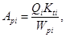
где Api - необходимое число рабочих автомобилей;
Qi - объем перевозок на i-м маршруте за год, т;
Kti - коэффициент, учитывающий массу тары на i-м маршруте; Kti = 1 - при транспортировке грузов без тары; Kti = 1,3 - 1,5 - при транспортировке грузов в контейнерах;
Wpi - производительность рабочего автомобиля за год на i-м маршруте, т:
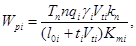
где Тn - время пребывания рабочего автомобиля на линии за год, ч:
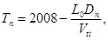
здесь L0 - нулевой пробег автомобиля за смену, км;
Dn - число рабочих дней в году; при 8-часовом рабочем дне Dn = 253; при 7-часовом - Dn = 305;
п - число смен работы автомобиля на линии, n £ 2;
qi - грузоподъемность автомобиля на i-м маршруте, т;
gi - коэффициент использования грузоподъемности автомобиля на i-м маршруте gI » 0,6 - 0,85;
Vti - техническая скорость автомобиля на i-м маршруте, км/ч; на внешних перевозках принимается в зависимости от модели автомобиля и согласно категории эксплуатации. Для полигонов с транспортировкой грузов по хорошим дорогам можно принять Vti, = 38 - 41 км/ч; на внутренних автомобильных дорогах промпредприятий при l > 1 км Vti = 15 км/ч;
Кn - коэффициент использования транспортного средства на линии; для нашего случая Кn = 0,8 - 0,9;
l0i - длина оборота (путь, проходимый автотранспортным средством по i-му маршруту, с возвратом в начальный пункт), км, определяемая по формуле
loi = lri + lni, (4)
здесь lri - пробег автотранспортного средства по i-му маршруту с грузом, км;
lni - то же без груза, км;
ti - продолжительность погрузки-разгрузки автомобиля на i-м маршруте, ч, принимаемая равной 2 - 3 ч;
Кmi - коэффициент неравномерности перевозок на i-м маршруте, учитывающий изменение продолжительности рейса, Kmi = 1,1 - 1,2.
3.31. Многообразие поступающих на полигон токсичных промышленных отходов требует точного знания их состава и свойств для определения условий хранения и метода обезвреживания. Все эти показатели должны быть приведены в паспорте и в опросном листе на отходы (см. прил. 1 и 2). Лаборатория полигона выполняет выборочный контроль на соответствие состава поступающих отходов данным, приведенным в паспорте и опросном листе. Особое внимание необходимо обратить на самовоспламеняющиеся, стихийно разлагающиеся, полимеризующиеся отходы, а также на отходы, которые могут вступить в реакцию с другими отходами или оказывать сильное коррозионное воздействие на углеродистую сталь.
3.32. На основании изучения состава отходов и их физико-химических свойств разрабатываются условия их хранения, транспортировки и обезвреживания. При этом обезвреживание должно осуществляться таким образом, чтобы эти отходы превращались в остатки, не содержащие веществ, растворимых в воде и приводящих к загрязнению грунтовых вод при их захоронении.
Наиболее распространенными методами обезвреживания отходов в настоящее время являются:
для отходов органического происхождения - сжигание при высоких температурах;
для неорганических веществ - физико-химическая обработка в несколько стадий, которая приводит к образованию безвредных, в большинстве случаев нейтральных, не растворимых в воде соединений.
В Пособии рассматривается только метод сжигания, так как при этом методе большая часть всех токсичных отходов обезвреживается, при этом объем этих отходов может быть доведен до 10 % их первоначального объема.
3.33. Твердые отходы, как правило, принимаются на хранение в железобетонные бункера, установленные в помещении.
3.34. Для каждого вида пастообразных и жидких отходов предусматриваются специальные обогреваемые емкости, устанавливаемые на открытой площадке.
3.35. Высокоагрессивные пастообразные отходы транспортируются в барабанах (вместимостью 60 - 100 л) из сгораемых синтетических материалов или, если они не коррозионные, в стальных барабанах вместимостью до 200 л. Отходы в таре, как правило, хранятся на открытой площадке под навесом.
3.36. Таким же образом, как и определение условий хранения отходов, проводится расчет количества подачи разных отходов в печь, исходя из условия постоянства количества теплоты и вредных веществ, выделяющихся при сгорании отходов.
3.37. Установка для сжигания твердых, пастообразных и жидких неутилизируемых токсичных промышленных отходов состоит из:
системы подачи и дозировки отходов;
печи с вращающимся барабаном;
камеры дожигания;
системы золо-шлакоудаления;
котла-утилизатора;
системы очистки дымовых газов.
Система подачи и дозировки отходов
3.37.1. Система подачи и дозировки отходов представляет собой соединяющее звено между площадками, где хранятся отходы, и печью сжигания отходов. Эти устройства должны быть спроектированы таким образом, чтобы различные отходы могли поступать в печь непрерывно и равномерно по количеству и теплотворной способности, чем достигается относительно стабильное сгорание.
Загрузочные устройства для твердых и пастообразных отходов
Загрузка печи с вращающимся барабаном твердыми отходами из приемных бункеров осуществляется мостовым краном, оборудованным многочелюстным или двухковшовым грейфером, в воронку дозировочного устройства (цепной конвейер, шнековый питатель и т.п.). Следует предусматривать, как правило, установку двух кранов.
Грейферный мостовой кран должен быть оснащен приспособлением для взвешивания, показывающим и регистрирующим массу загружаемых отходов.
Кабина машиниста крана может быть совмещена с пультом управления или расположена отдельно и должна обеспечивать хороший обзор как бункера с отходами, так и воронки дозировочного цепного транспортера.
Цепной транспортер, оснащенный регулятором высоты слоя, сбрасывает отходы в дозированных количествах через шлюз и горизонтальную входную камеру во вращающуюся печь. Очистка наклонной плоскости входной камеры осуществляется паром, подаваемым через специальную форсунку. Во входной камере может быть еще предусмотрен толкатель, который служит для проталкивания находящихся на наклонной плоскости отходов. Толкатель охлаждается водой и управляется в соответствии с программой загрузки вращающейся печи. Пастообразные отходы в барабанах и бочках при помощи роликовых транспортеров подаются на платформу специального подъемника печи.
Подъемное устройство поднимает барабан (бочку) в предварительную камеру, присоединенную к входной камере печи.
Предварительная камера отделена от входной камеры вертикальным охлаждаемым клапаном. При поступлении барабанов (бочек) в предварительную камеру сама загрузочная платформа закрывает камеру. После открытия вертикального клапана барабан (бочка) продвигается в печь посредством специального охлаждаемого опрокидывающего устройства.
Загрузочные устройства для жидких, пастообразных и шламообразных отходов
Жидкие отходы транспортируются по трубопроводам к форсункам (горелкам) печи из соответствующих емкостей насосами. В качестве форсунок для сжигания жидких отходов, как правило, применяются форсунки с паровым (воздушным) распыливанием. Жидкие отходы с низкой теплотворной способностью сжигаются в горелках совместно с жидкими отходами, обладающими высокой теплотворной способностью, или с топливом (жидким или газообразным).
Пастообразные и вязкотекучие отходы с включением твердых частиц из емкостей специальными шнековыми насосами по трубопроводу транспортируются через специальное сопло диаметром до 20 мм непосредственно в печь. Это сопло в большинстве случаев позволяет обходиться без фильтрования отходов перед сжиганием.
Основным звеном всей системы загрузки вращающейся печи является смонтированная на подвижной платформе лобовая стенка, которая служит для запирания вращающегося барабана печи и защищена огнеупорным кирпичом. Все необходимые для осуществления процесса горения устройства смонтированы на лобовой стенке. На все горелки (за исключением сопел) устанавливаются запально-защитные устройства.
Так как на установках для сжигания отходов состав отходов и, следовательно, теплотворная способность постоянно колеблются, то необходимо предусматривать установку горелок, работающих на топливе (жидком или газообразном) для исключения резких колебаний температуры в печи. Теплопроизводительность этих горелок принимают равной 15 - 25 % расчетной теплопроизводительности печи.
Для постоянного контроля пламени во вращающейся барабанной печи следует предусматривать установку телевизионной камеры.
Так как тепловая нагрузка печи колеблется, то регулировка соотношения воздух-отходы осуществляется вручную со щита КИП по цвету пламени и температуре на выходе из печи.
Вращающийся барабан печи
3.37.2. Вращающийся барабан печи является основным элементом установки для сжигания твердых, пастообразных и жидких отходов.
Размеры печи следует выбирать таким образом, чтобы даже при пиковых нагрузках, превышающих максимальную мощность установки сжигания, удельная тепловая нагрузка на объем печи и скорость дымовых газов в печи не превышали максимальных значений для обеспечения полного выгорания отходов.
Термически сильно нагруженный выходной конец вращающегося барабана представляет собой охлаждаемое воздухом жаростойкое выходное звено. Со стороны входа и выхода вращающийся барабан оснащается специальными уплотнителями, которые обеспечивают минимальное поступление воздуха, подсасываемого из атмосферы в печь.
Вращающийся барабан оснащается двумя рабочими кольцами из стального литья, которые опираются на ролики, приводится в движение посредством зубчатого обода, редуктора и электродвигателя. На случай отключения электроэнергии должен быть предусмотрен аварийный дизель-генератор.
Определение геометрических размеров барабана производят исходя из следующих условий:
температура сжигания отходов - 900 - 1100 °С, при наличии галогенсодержащих соединений - до 1200 °С;
скорость дымовых газов в барабане - 2 - 3 м/с, максимальная - 5 м/с;
теплонапряжение по объему - 0,4 ГДж/ (м3 × ч) [1,0 × 105 ккал/(м3 × ч)], максимальное - 0,6 ГДж / (м3 × ч) [1,5 × 105 ккал/ (м3 × ч)];
теплонапряжение по сечению - 6 ГДж/ (м2 × ч) [1,5 × 106 ккал/(м2 × ч)], максимальное - 8 ГДж/ /(м2 × ч)[2 × 106 ккал/(м2 × ч)];
время нахождения отходов в печи - 0,5 - 2 ч.
Время нахождения зависит от состава отходов. Если в отходах содержатся углеводороды с двойными связями (остатки смолы и полимеры), то для достижения полного выгорания требуется более продолжительное время нахождения отходов в печи по сравнению с горением летучих отходов и легко расщепляемых углеводородов;
коэффициент избытка воздуха в печи - a = 2,2 - 2,5;
продолжительность работы печи в году - 6000 - 6500 ч.
Футеровка вращающейся барабанной печи
Футеровка вращающегося барабана печи подвержена химическому, механическому и термическому воздействиям одновременно. Это влияние складывается из воздействия отходов, шлаков, дымовых газов и механических воздействий, являющихся результатом вращения барабана.
Вращающийся барабан печи может быть условно разделен на:
входную зону, которая составляет приблизительно 1/7 общей длины барабана и характеризуется выделением влаги и жидкой фазы, вследствие наличия собственной влаги и жидких органических соединений в отходах в связи с начинающимся испарением этих жидкостей, а также из-за начинающегося плавления находящихся в твердой форме химических соединений, особенно искусственных материалов, которые, как правило, при горении не образуют пламени. Требования, предъявляемые к футеровочному материалу этой зоны: высокая прочность на истирание и ударные нагрузки, хорошая устойчивость к смене температур. Для футеровки следует применять твердый шамотный кирпич;
зону плавления и испарения, занимающую также приблизительно 1/7 длины вращающегося барабана. Температура в этой зоне - до 900 °С. Основную нагрузку огнеупорная футеровка несет за счет конденсации, инфильтрации и затвердевания органических и неорганических соединений, сопровождаемых реакциями этих соединений с составными частями огнеупорной футеровки. Эта зона характеризуется плавлением и испарением большинства искусственных материалов, интенсивным образованием газа и пара, сгоранием легковоспламеняющихся газовых смесей на поверхности отходов.
Вследствие сильного испарения щелочей, возникающего в этой зоне, здесь, как правило, применяется кирпич, содержащий не менее 65 % Аl2О3;
зону сгорания, которая занимает около 2/7 длины барабана. Температура в этой зоне при обычных условиях - до 1100 °С, в особых случаях - до 1200 °С. Напряженное состояние огнеупорной футеровки продолжается из-за усиленной инфильтрации жидких шлаков и из-за реакции этих шлаков с составными частями футеровки. В этой зоне образуется плавящаяся при низкой температуре эвтектика, которая в основном состоит из Fe2O3, SiO2, различных гидроокисей и щелочей. За счет прилипания частичек шлака, плавящихся при более высокой температуре, образуются более или менее крупные налеты шлаков (настыль), наличие которых даже желательно (шлаковая шуба). В этих диапазонах применение кирпича с содержанием Аl2О3, равным примерно 85 %, необходимо, так как этот кирпич обладает более высокой устойчивостью к коррозии. Щелочи в этом диапазоне температуры не играют существенной роли, тем более что образующийся на поверхности кирпича застывший слой шлака препятствует инфильтрации;
выходную зону и зону выгорания, занимающую 3/7 длины барабана. Температура в этой зоне - до 1600 °С. Принудительное движение пламени и дымовых газов во вращающемся барабане, а также неизбежный путь жидких и твердых остатков при сгорании по всей длине печи характеризуют напряженное состояние огнеупорной футеровки в этой зоне. Высокотемпературные еще догорающие газы, с высокой интенсивностью излучения (С-частицы) способствуют плавлению и текучести шлаков. Жидкий шлак предотвращает в значительной степени проникание газов в огнеупорную футеровку. В этом диапазоне наиболее пригодным футеровочным материалом является кирпич на корундовой основе с содержанием Аl2О3 до 85 %.
Из вышесказанного следует, что «шлаковая шуба» является лучшим средством защиты футеровки.
На продолжительность службы футеровки печи при сгорании отходов кроме тепловой нагрузки оказывает немалое влияние конструкция вращающегося барабана, его прочностные показатели и связанная с ними деформация, которой подвергается печь во время эксплуатации. Это в первую очередь относится к изменению овальности, которое не должно превышать 0,3 % диаметра барабана.
Следующим критерием для продолжительности срока службы футеровки является прогиб барабана вдоль оси, находящийся в диапазоне 0,002 расстояния между опорами и учитываемый при выборе толщины стенки барабана.
Камера дожигания
3.37.3. Печь с вращающимся барабаном не обеспечивает полного сгорания компонентов, выделяющихся из органических соединений и имеющих высокую термическую стабильность. Поэтому к печи необходимо присоединить камеру дожигания, в которой при соответствующей подаче воздуха, высоких температурах и продолжительном времени пребывания достигается полное окисление всех органических загрязнений дымовых газов.
Геометрические размеры камеры дожигания рассчитываются, как правило, с учетом следующих параметров:
температура горения на выходе из камеры - 900 - 1000 °С, при галогенсодержащих отходах - 1200 - 1400 °С. Температура дымовых газов на выходе из камеры дожигания поддерживается за счет сжигания топлива (жидкого или газообразного) в горелках или за счет сжигания высококалорийных жидких отходов;
скорость дымовых газов, отнесенная ко всему сечению камеры дожигания, - 2 - 4 м/с;
объемное теплонапряжение - 0,4 - 0,6 ГДж/(м3 × ч) [1,0 - 1,5 × 105 ккал/(м3 × ч)];
теплонапряжение по сечению - 6 - 8 ГДж/ (м2 × ч) [1,5 - 2,0 × 106 ккал/(м2 × ч)];
время пребывания дымовых газов в Камере дожигания (от последней горелки до выхода) - 2 - 6 с.
Время пребывания в камере дожигания зависит от вида и количества органических соединений, содержащихся в отходах.
Камера дожигания должна быть сконструирована таким образом, чтобы достичь наиболее полного смешения дымовых газов, поступающих из печи, и дымовых газов, образующихся в камере дожигания при сжигании топлива.
Камера дожигания должна быть футерована огнеупорным кирпичом, который выдерживает температуру от 1450 до 1600 °С.
Система мокрого золо-шлакоудаления
3.37.4. Для мокрого удаления золы и шлака из печи с вращающимся барабаном и камеры дожигания необходимо предусматривать, как правило, приспособление, располагаемое поперечно оси вращающегося барабана. Для обеспечения обслуживания камеры дожигания снизу это приспособление должно быть передвижным.
Устройство для мокрого золо-шлакоудаления представляет собой водонепроницаемый корпус, похожий на ванну, облицованный базальтовыми плитами. Зола и шлак транспортируются, как правило, цепным скребковым транспортером, смонтированным в ванне. Уровень жидкости в ванне поддерживается постоянным за счет подпитки воды. Выводятся зола и шлак из барабана печи и камеры дожигания через трубы, погруженные ниже уровня жидкости в ванне не менее чем на 300 мм для образования газонепроницаемого затвора по отношению к атмосфере.
Котел-утилизатор
3.37.5. Для охлаждения выходящих из камеры дожигания дымовых газов, образующихся при сжигании различных отходов, и утилизации физического тепла с целью выработки перегретого водяного пара необходимо предусматривать установку котла-утилизатора. Дымовые газы вызывают сильное загрязнение, эрозию и коррозию поверхностей, поэтому к конструкции котла-утилизатора следует предъявлять особые требования.
Перед входом в котел-утилизатор дымовые газы, как правило, должны быть охлаждены до температуры 800 °С впрыском воды (что предпочтительнее) или смешением с атмосферным воздухом. При этой температуре летучая зола находится в твердом состоянии и, следовательно, не прилипает к поверхностям котла.
Примечание. В случае отсутствия в дымовых газах легкоплавких минерализованных соединений температура дымовых газов на входе в котел-утилизатор допускается до 1300 - 1400 °С.
Как правило, для этих целей необходимо применять барабанные водотрубные котлы частично с естественной, а частично с принудительной циркуляцией.
Все теплопередающие поверхности котла следует выполнять из гладких труб, что позволит свести до минимума опасность загрязнения теплопередающей поверхности.
Каналы для прохода газов следует предусматривать достаточно широкими, чтобы из-за оседающих частичек золы они не зарастали и в период эксплуатации могли быть легко очищены (продувкой сжатым воздухом, паром).
Для предотвращения коррозии температура стенок всех труб котла-утилизатора должна быть в пределах 150 - 350 °С. Скапливающуюся в каналах котла-утилизатора летучую золу следует непрерывно удалять через воронки и затворы (шлюзовые, мигалки и т.п.) на транспортеры.
Необходимо предусматривать системы очистки нагревательных поверхностей котла от золы (дробеочистку, обдувку и т.п.). Конструкция котла должна обеспечивать легкий доступ и осмотр всех элементов котла.
Система очистки дымовых газов
3.37.6. Образующиеся при сжигании токсичных промышленных отходов дымовые газы содержат значительное количество различного вида пыли, аэрозолей, хлористого водорода, двуокиси серы, фтористого водорода, тяжелых металлов. Следовательно, дымовые газы перед выбросом их в атмосферу должны быть очищены до такой степени, чтобы их загрязнения не превышали предельно допустимый выброс.
В настоящее время система очистки дымовых газов аналогичных установок, эксплуатирующаяся в ФРГ, обеспечивает следующее содержание загрязнений в дымовых газах, мг/м3:
пыли ..................................................................................................... менее 100
фтористых соединений (в пересчете на F)........................................ « 5
окиси углерода..................................................................................... « 100
органического углерода...................................................................... « 50
двуокиси серы...................................................................................... « 100
Размеры частичек пыли, содержащейся в дымовых газах, составляют 10-6 - 10-3 м.
Система очистки дымовых газов, как правило, должна состоять из следующих стадий:
сушки образующихся при мокрой очистке дымовых газов шламов;
очистки дымовых газов от пыли;
абсорбции токсичных газов.
Сушку шламов следует осуществлять, как правило, в распылительной сушилке, причем агентом сушки являются сами дымовые газы, выходящие из котла-утилизатора с температурой около 300 °С.
Дымовые газы могут быть очищены от пыли как механическим (в рукавном фильтре), так и электрическим (в электрофильтре) способами.
Абсорбцию кислых токсичных газов надлежит выполнять в скрубберах, орошаемых водным раствором солей. За счет добавления щелочных компонентов (как правило, известкового молока) абсорбированные кислые газы нейтрализуются с образованием соответствующих солей. Таким образом, циркулирующая водная фаза содержит сульфаты, сульфиды, хлориды, фториды и карбонаты.
Для обеспечения более надежной очистки дымовых газов от загрязнений необходимо предусматривать санитарную ступень очистки, насадка которой орошается слабым раствором щелочи. Все растворы, образующиеся при очистке дымовых газов, направляются на стадию сушки.
3.38. Особое внимание следует уделять шлакам и золам, содержащим тяжелые металлы. При сжигании токсичных промышленных отходов наряду с нерастворимыми появляются многочисленные растворимые в воде соединения металлов в виде окисей, хлоридов и сульфатов. Эти соединения, содержащиеся в шлаках и золах, могут легко растворяться при мокром удалении. Следовательно, необходимо предусматривать периодическую продувку ванн системы мокрого золо-шлакоудаления. Для получения труднорастворимых гидроокисей металлов в продувочную воду необходимо добавлять известковое молоко. Такую же обработку можно осуществлять и непосредственно в ванне.
Кроме того, некоторые окиси и хлориды металлов обладают при температуре 150 °С достаточно высоким парциальным давлением паров, которые не улавливаются в сухой системе очистки от пыли. Главным образом, это окиси мышьяка, селена, фосфора, а также хлориды сурьмы, мышьяка, железа, свинца, кадмия, висмута. Так как некоторые из этих соединений очень токсичны, то система абсорбции должна работать очень эффективно.
В связи с вышеизложенным, зола и шлак из печи с вращающимся барабаном, камеры дожигания, котла-утилизатора и сушилки должны быть направлены на захоронение с соблюдением всех мер предосторожности
3.39. На чертежах 1 - 3 представлены схемы агрегатов сжигания твердых, пастообразных и жидких токсичных промышленных отходов, разработанные фирмами «Фон-Ролл» (Швейцария), «МАН» (ФРГ) и «ЧКД-Дукла» (ЧССР).
3.40. При производстве земляных работ и подготовке основания под сооружения полигона необходимо руководствоваться СНиП 3.02.01-87 и Пособием по производству работ при устройстве оснований и фундаментов.
3.41. Карты в плане следует выполнять вытянутой формы при соотношении сторон от 1:1,5 до 1:4 с целью сокращения открытой поверхности отходов при захоронении.
Черт. 1. Агрегат сжигания твердых, пастообразных и жидких токсичных промышленных отходов (фирма «Фон-Ролл» - Швейцария)
1 - грейферный кран; 2 - рольганг и лифт для загрузки бочек; 3 - загрузочное устройство для твердых отходов; 4 - печь с вращающимся барабаном; 5 - камера дожигания; 6 - шлакоудаление; 7 - котел-утилизатор; 8 - реактор (сушилка); 9 - циклон; 10 - вывод сухих солей; 11 - скруббер Вентури; 12 - дымовая труба
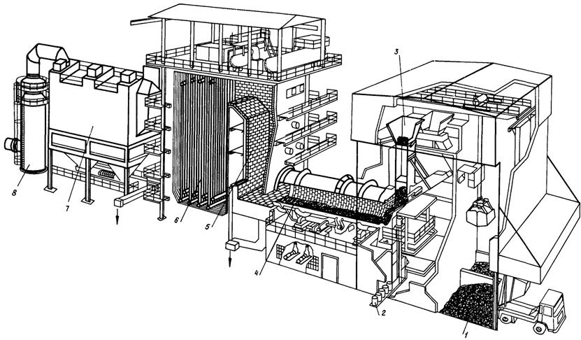
Черт. 2. Агрегат термического обезвреживания токсичных промышленных отходов (фирма «МАН» - ФРГ)
1 - разгрузка отходов; 2 - загрузка бочек; 3 - загрузка сыпучих отходов; 4 - печь с вращающимся барабаном; 5 - камера дожигания; 6 - котел-утилизатор; 7 - электрофильтр; 8 - скруббер
Черт. 3. Схема станции сжигания промышленных отходов (фирма «ЧКД-Дукла» - ЧССР)
1 - бункер; 2 - мостовой кран; 3 - загрузочная воронка с гидравлическим подающим устройством; 4 - стабилизационная горелка; 5 - печь с вращающимся барабаном; 6 - выход перегретого пара; 7 - пароперегреватель; 8 - камера дожигания; 9 - водоподогреватель; 10 - электрофильтр; 11 - дымосос; 12 - дымовая труба; 13 - транспортный шнек; 14 - транспортный бункер; 15 - мокрое устройство для удаления шлака
Торцевые откосы должны быть с заложением 1:3; 1:4 с учетом возможности заезда машин и механизмов при строительстве, боковые откосы - крутыми, назначаются исходя из их устойчивости и конструкции экрана.
3.42. Дно карт следует проектировать с уклоном по длине. Закладку отходов необходимо начинать с торца, с наиболее высокой отметки дна.
В карте, где производится прием отходов, дно целесообразно разделить на два или три отсека дамбочками из глины или суглинка высотой 1,0 м, позволяющими разделить дождевые воды на чистые и загрязненные.
После дождя стоки со дна карты необходимо перекачивать передвижными насосами: чистые - в дождевую сеть полигона, загрязненные (контактирующие с отходами) - в автоцистерну с транспортировкой на завод по обезвреживанию отходов.
При наличии пластового дренажа под экраном карт поверхности днища необходимо придать также поперечный уклон к оси карты, повторяющий уклон пластового дренажа.
3.43. Подготовленное основание карт перед устройством экрана или пластового дренажа под экран должно иметь несущую способность не менее 0,1 МПа (1,0 кг/см2).
При прохождении дождя на подготовленное основание карты воду необходимо откачать.
После естественной подсушки основание повторно выравнивается и укладывается.
3.44. В табл. 2 СНиП 2.01.28-85 в знаменателе дан расход вяжущих, кг/м2, для поверхностной обработки и закрепления грунта при консервации отходов в картах; показатель в числителе применяется для улучшения противофильтрационных свойств грунтовых экранов.
3.45. Строительство экрана карт необходимо вести в сухую погоду и, как правило, при положительной температуре.
3.46. При размещении полигона на подтопляемой территории в случае устройства под экранами пластового дренажа требование СНиП 2.01.28-85 п. 2.2 в части 2-метрового разрыва уровня грунтовых вод с дном карты исключается ввиду надежности защиты.
4.1. Вертикальная планировка полигона должна обеспечивать, как правило, один стоковый бассейн дождевых вод, а плановая компоновка должна быть простой и, по возможности, прямолинейной.
4.2. Общая система канализации полигона должна быть бессточной, с повторным использованием незагрязненной части сточных вод для производственного водоснабжения и сжиганием или испарением загрязненной части сточных вод.
4.3. СНиП 2.01.28-85 определил минимальное число секций контрольно-регулирующих прудов дождевых вод. Для более гибкой и рациональной работы прудов по разделению загрязненной части стока число секций, с учетом потребной очередности развития, целесообразно увеличить до трех-четырех.
4.4. Объем регулирующей емкости загрязненной части дождевых вод (при подаче стоков на сжигание) следует принимать в размере 50 % ее расчетного годового количества, но не менее 50 % общего объема одного расчетного дождя.
4.5. Объем загрязненной части дренажных вод следует принимать в размере 5 - 10 % расчетного годового водопритока.
4.6. Объем контрольно-регулирующих емкостей дренажных вод следует принимать равным максимальному 2-суточному объему водопритока дренажных вод системы дренажа.
4.7. Объем регулирующей емкости загрязненной части дренажных вод при подаче стоков на сжигание или очистку следует принимать не менее 10 % расчетного годового объема.
При сравнительно небольших объемах притока дренажных вод (до 100 м3/сут) регулирующая емкость загрязненных дренажных вод отдельно не предусматривается, этот объем учитывается в контрольно-регулирующих емкостях.
4.8. При благоприятной взаимной компоновке допускается объединять регулирующие емкости загрязненных дождевых и дренажных вод в общую емкость, состоящую не менее чем из двух секций.
4.9. При перекачке стоков в естественные испарители регулирующие емкости загрязненных дождевых и дренажных вод не предусматриваются. Стоки перекачиваются в испарители непосредственно из контрольно-регулирующих прудов или емкостей.
4.10. Производительность насосной станции перекачки загрязненных стоков на обезвреживание следует назначать равной:
для дренажных вод - расчетному максимальному расходу общего водопритока;
для дождевых вод - исходя из перекачки расчетного годового объема загрязненной части дождевых и талых вод в течение 2 - 3 месяцев.
В насосной станции должно быть не менее двух рабочих агрегатов и одного резервного.
4.11. При перекачке загрязненных стоков в естественные испарители производительность насосной станции следует назначать равной:
для дренажных вод - удвоенному расчетному максимальному расходу общего водопритока;
для дождевых вод - исходя из возможности перекачки 50 % объема одного расчетного дождя за период не более 24 ч.
4.12. При размещении на участке захоронения канализационных очистных сооружений полигона (КОС) их проектирование следует выполнять исходя из возможности загрязнения стоков отходами.
При этом должны предусматриваться мероприятия, исключающие фильтрацию стоков в грунт.
Класс вредности стоков следует принимать по классу наиболее вредных отходов, подлежащих захоронению, при содержании их в общем объеме не менее 10 %.
4.13. Перед КОС следует предусматривать усреднительную емкость из двух секций общей вместимостью, равной расчетному суточному расходу стоков.
Стоки подаются на биологическую очистку после контроля химического состава. При невозможности биологической очистки стоков их следует направлять на завод для термического обезвреживания или на пруды-испарители. Общее количество химически загрязненных и хозяйственно-бытовых стоков следует принимать в размере 5 - 10 % их годового объема.
4.14. Загрязненные дождевые или дренажные воды из регулирующих емкостей после контроля химического состава следует направлять на сооружения биологической очистки (при их наличии), а при загрязнениях, исключающих очистку, - отводить на термическое обезвреживание или в пруды-испарители.
Производительность КОС при этом следует увеличить на 50 % среднесуточного расхода загрязненной части дождевых и дренажных вод.
4.15. Отбор проб сточных вод на химический анализ следует производить автоматическими пробоотборниками, например, системы ПАПС Московского завода «Коммунальник» или ПР-1 Псковского завода «Гидроимпульс» Минводхоза СССР.
4.16. Подачу сточных вод полигона в соответствующие емкости при наличии автоматических анализаторов загрязнений, как правило, следует производить с помощью системы АСУТП.
При отсутствии автоматических анализаторов следует предусматривать ввод результатов химических анализов диспетчером в ЭВМ, которая по разработанной программе осуществляет автоматические переключения запорной арматуры.
4.17. Все сточные воды с территории полигона, оказавшиеся после контроля нормативно чистыми, подлежат сбросу в пруд сезонного регулирования с последующим использованием их для производственного водоснабжения полигона или другого ближайшего предприятия.
Для улучшения качества этой воды ее целесообразно разбавлять водой из природных водоисточников.
4.18. На территории завода в местах, где возможны проливы загрязненных стоков, необходимо предусматривать обвалование участков высотой не менее 250 мм.
4.19. На открытых отбортованных участках следует предусматривать отвод первой части расчетного дождя (в течение не менее 15 мин) на обезвреживание, а последующую часть дождя сбрасывать в дождевую сеть.
4.20. При расположении завода и участка захоронения на различных площадках система канализации на каждой площадке решается аналогично.
5.1. Глиняные экраны - наиболее простые, надежные и долговечные противофильтрационные устройства.
При наличии местных глин их применение является наиболее экономичным и целесообразным.
Исходная глина ненарушенной структуры должна иметь коэффициент фильтрации Kf не ниже 0,001 м/сут. При использовании ее в экранах глина превращается в пасту путем перемешивания и достижения необходимого коэффициента фильтрации (см. табл. 2 СНиП 2.01.28-85). Толщина экрана в испарителях обосновывается расчетами исходя из допустимого градиента напора I = 10, но должна быть не менее 0,5 м.
5.2. Экран состоит из двух слоев глины, каждый толщиной не менее 0,5 м. Между слоями глины устраивается дренажный слой из крупнозернистого песка толщиной 40 - 60 см, уточняемый расчетами. Поверхность экрана планируется таким образом, чтобы дренажные воды между слоями глины поступали в трубчатые дрены и с помощью насосной станции вновь закачивались в емкость. Эффект двухслойного экрана заключается в том, что на нижний слой действует напор воды, равный глубине ее в дренажном слое.
5.3. Грунтобитумный экран назначается, как правило, как основание для других типов экранов и представляет собой минеральный естественный грунт, обработанный на глубину 10 - 15 см жидким битумом или нефтью с добавлением цемента и уплотненный гладкими катками. Расход нефти и цемента приведен в табл. 2 СНиП 2.01.28-85.
Перед внесением добавок грунт протравливается гербицидами на глубину до 20 см.
5.4. В чистом виде бетон или железобетон в экранах применяется редко, так как этот материал имеет сравнительно высокий коэффициент фильтрации (Kf = 0,00001 м/сут) и слабую трещиностойкость. Снижение коэффициента фильтрации до Кf = 0,00001 м/сут достигают путем торкретирования или силикатизации. Процесс этот дорогостоящий, поэтому железобетон применяется в небольших емкостных сооружениях типа резервуаров и отстойников. По фильтрационным и прочностным соображениям толщина монолитных или сборных железобетонных плит принимается не менее 10 - 15 см, бетон марки не ниже Б, В30, F100, W8 в соответствии со СНиП 2.03.01-84.
Конструкции температурных швов железобетонных плит приведены в прил. 3 (размеры даны в сантиметрах).
5.5. Институты «Гидропроект», МИИТ и ряд других организаций разработали рецепты полимер-бетонов, обладающих повышенной плотностью (Kf < 0,001 м/сут), трещиностойкостью, морозостойкостью и устойчивостью к воздействию агрессивных сред.
Полимербетоны отличаются от обычного бетона тем, что в качестве связующего вместо цемента используются фурановые и эпоксидные смолы или их смесь ФАЭД-20 (ФАМ) - табл. 2, состоящие на 80 % из более дешевого продукта - фурана и на 20 % из эпоксидной смолы с добавкой отвердителя - полиэтиленполиамина.
Таблица 2
Рекомендуемые составы полимербетона
|
Полимербетон ФАМ, % по массе |
||
|
на андезите |
на графите |
|
|
Гранитный щебень фракции 3 - 10 мм |
51,0 |
50,0 |
|
Кварцевый песок фракции 1,5 - 2,0 мм |
25,0 |
28,0 |
|
Андезитовая мука |
13,0 |
- |
|
Графитовая мука |
- |
9,0 |
|
Смола ФАМ |
8,5 - 9,0 |
10 - 10,5 |
|
Бензолсульфокислота |
2,5 |
2,5 |
5.6. Значительное распространение получили бетонопленочные экраны, в которых бетон выполняет защитные функции, а пленка - противофильтрационные.
Монолитные или сборные железобетонные плиты толщиной 8 - 15 см укладываются на защищенную от повреждений пленку. Основание под пленку устраивается как для пленочного экрана. При укладке сборных железобетонных плит на пленку следует соблюдать повышенную осторожность.
5.7. Асфальтобетонные экраны (черт. 4) выполняются из гидротехнического мелкозернистого асфальта.
Основанием однослойного экрана могут быть практически любые грунты, поддающиеся обработке грейдером, с модулем деформации после уплотнения не менее 10 МПа (100 кгс/см2). После планировки грунты подвергаются обработке (протравливанию) гербицидами на глубину 20 см. Затем производится поверхностная обработка грунта на глубину 10 - 15 см с внесением битума или сырой нефти из расчета 1,5 - 2,0 кг/м2. После чего основание уплотняется 5-тонными катками до полного устранения деформации. При сравнительно слабых пылеватых супесях и суглинках перед розливом нефти или битума рекомендуется вносить активные добавки - цемент или известь с расходом, указанным в таб. 1 СНиП 2.01.28-85. На подготовленное основание укладывается мелкозернистый асфальтобетон слоем 40 - 60 мм. Поверхность асфальтобетона покрывается слоем жидкого битума толщиной 2 - 4 мм с последующей посыпкой слоем песка толщиной 5 - 10 мм.
При напорах до 5 - 10 м экран считается нефильтрующим. На откосах при необходимости устраивается дополнительное крепление, обоснованное волновыми расчетами.
На черт. 4 приведена конструкция экрана, в основании которого залегают супеси или суглинки (размеры даны в сантиметрах).
5.8. При двухслойном экране промежуточный слой устраивается из сортированного гравия или щебня слоем 15 - 20 см с крупностью фракции 10 - 40 мм, покрытых битумом (черный гравий). Обработка верхнего и нижнего слоев асфальтобетона такая же, как для однослойного экрана.
При двухслойном экране для сбора и отвода дренажной воды из межслойного пространства дно емкостных сооружений должно быть с уклоном 10 - 20 ‰ к трубчатым дренам. Расстояние между дренами следует принимать 100 - 200 м. Продольный уклон трубчатых дрен - 2 - 5 ‰.
5.9. В отличие от асфальтобетонного экрана в рассматриваемом экране вместо розлива по асфальту чистого битума слоем 2 - 4 мм производится розлив битумно-латексной эмульсии слоем 4 - 6 мм, состоящей из 20 % латекса и 80 % битума по массе. Битумно-латексная эмульсия наносится на горизонтальную поверхность 1 - 2 слоями, а на откосы - 2 - 3 слоями толщиной 2 мм.
Черт. 4. Экран асфальтобетонный однослойный с битумным покрытием
1 - мелкозернистый асфальт - толщина слоя 5 см; 2 - битумные маты на стеклоткани (ГОСТ 8481-75) - в 2 - 4 слоя; 3 - гравийно-песчаная смесь; 4 - анкер, шайба и гайка Д-20; 5 - прижимной антисептированный брус размером 16´12 см; 6 - крупнозернистый асфальт-толщина слоя 6 см; 7 - грунт, протравленный и обработанный битумом или нефтью
Ввиду чувствительности экрана к свету поверхность его засыпается защитным слоем из однородного грунта или промышленных отходов фракцией не более 3 мм. Толщина защитного слоя не менее 0,5 м. Откосы при необходимости дополнительно крепятся на случай волновых воздействий. Работы выполняются при температуре не ниже 10 °С. Битумно-латексная эмульсия приготовляется в специальном битумном котле, где битум разогревается до 140 - 150 °С. При непрерывном перемешивании в него вводится латекс. Время приготовления 5 - 10 ч (уточняется в процессе испытания перед началом работ). Охлажденная до 120 °С битумно-латексная эмульсия наносится на асфальт автогудронатором с гладилкой или с помощью распылителя набрызгом.
Применяемые марки латекса: СКД-1 - по ГОСТ 11604-79, состоящий из водной эмульсии дивинилметакрилового каучука с содержанием сухого вещества 28,8 %; СКС-30 - по ГОСТ 11808-76, состоящий из водной эмульсии дивинилстирольного каучука с содержанием сухого вещества 27,8 %; СКЭПТ - водная эмульсия этиленпропиленового каучука с содержанием сухого вещества 66 %.
Применяемые марки битума: БН 70/30 - по ГОСТ 6617-76; БНД 40/60 и БНД 40/90 - по ГОСТ 22245-76.
5.10. Конструктивно асфальтополимербетонные экраны ничем не отличаются от обычных асфальтобетонных экранов; выполняются они однослойными и двухслойными. Различие заключается в том, что асфальтобетоны выполняются на вяжущем из битума, а асфальтополимербетоны - на модифицированном вяжущем, состоящем из битума с добавлением каучука или других полимеров в количестве 10 - 20 % массы битума. Это придает асфальтополимербетону повышенную морозостойкость и эластичность и снижает его водопроницаемость, что обусловливает целесообразность его применения при строительстве противофильтрационных экранов.
Ввиду повышенной гибкости и прочности асфальтополимербетонные экраны могут выполняться монолитными и сборно-монолитными.
Для сборно-монолитного варианта экраны изготовляются в виде армированных металлической сеткой лент шириной 2 м, толщиной 4 - 6 см. Ленты наматываются на барабан диаметром 1,5 м. Арматура диаметром 6 - 7 мм с ячейками 100´100 мм. При длине намотанной ленты 35 м общая масса барабана составляет не более 10 т. Стыки между лентами (зазоры) шириной 5 - 10 см заделываются свежеприготовленным асфальтополимербетоном с температурой 130 - 150 °С, который оплавляет края сборных плит.
После укатки образуются качественно монолитные стыки. В местах плохого качества стыка последний снова разогревается, паяльными лампами до получения монолитного состояния.
Рекомендуются следующие составы асфальтополимербетонов, отличающиеся инертными добавками из условий агрессивности среды:
Для щелочной среды (рН > 8),% по массе: щебень
известняковый (фракции 5 - 15 мм) .......................................................... 30 - 70
песок обычный (фракции мельче 5 мм)..................................................... 50 - 20
порошок известняковый (известь-пушонка) ............................................ 10 - 10
сажа ............................................................................................................... ДГ-100
вяжущее полимербитумное ........................................................................ сверх 100 % минеральной части
Всего .................................................................................................. 10 - 15
в том числе БНД 90/130
или БНД 60/90................................................................................... 8 - 11,5
латекс СКД-1 (или каучук «Гекталес»;
СКЭПТ/30; ДСТ-30; латекс СКС-30.............................................................. 2 - 3,5
Для кислотной среды (рН < 7), % по массе:
щебень гранитный (или диоритовый,
сиенитовый фракции 5 - 15 мм) ................................................................. 35 - 40
песок кварцевый (фракции меньше 5 мм.................................................. 45 - 40
маршалит (молотый кварцевый порошок) ............................................... 18
строительная известь или известь-пушонка.............................................. 2
Итого............................................................................................................ 100 %
Полимербитумное вяжущее такое же, как и для первого состава. Для увеличения морозостойкости применяется смола ПАБ из расчета: 50 % ПАБ и 50 % полимера.
Повышенный процент полимеров применяется для сборных плит, транспортируемых к месту укладки в собранном виде на барабанах диаметром 1,5 м. Асфальтополимербетон приготовляют на обычных асфальтобетонных заводах, дооборудованных узлом по приготовлению полимербитумного вяжущего, состоящим из емкости для хранения исходного полимера (желательно в виде латекса или порошка с фракциями не более 2 мм) и битумно-варочного котла с лопастной мешалкой для приготовления полимербитумной смеси. Таких котлов должно быть два, в том числе один - расходный.
Вяжущее приготовляют следующим образом: если к латексу применяют добавки (например, смолу ПАБ), то сначала латекс или сухой полимер смешивают со смолой в высокооборотной мешалке. Полученную эмульсию вводят в выпаренный и разогретый до 150 - 170 °С битум, затем смесь прогревают до полного выпаривания воды при той же температуре. Так же готовят битумно-латексную эмульсию путем ввода латекса или сухого полимера в разогретый битум. Минеральная часть (кроме порошков) подогревается в сушильном барабане до 200 - 220 °С. Асфальтополимербетонная смесь готовится в серийных смесителях путем перемешивания приготовленных компонентов в течение 1,5 - 2,0 мин. Готовая смесь транспортируется автосамосвалами к месту укладки. При укладке температура смеси должна быть не ниже 120 - 150 °С. Чистая поверхность уплотненного асфальтополимербетонного экрана, так же как асфальтобетонного, покрывается слоем чистого битума толщиной 2 - 4 мм с посыпкой песком или в более ответственных случаях - битумно-латексной эмульсией слоем 4 - 6 мм.
Исследовал асфальтополимербетоны и внедрял их в производство ВНИИГ им. Б.Е. Веденеева. И в дальнейшем рекомендуется выполнять эти работы при консультации и участии этого института.
5.11. При проектировании пленочных экранов необходимо руководствоваться инструкцией СН 551-82.
Черт. 5. Экран из полиэтиленовой пленки однослойный.
Разрез I-I. Узлы А, Б
1 - ограждающая дамба; 2 - нефтеперехватываюшая западь; 3 - плиты маячные железобетонные размером 2,0´2,0´0,12 м; 4 - башенный водосброс из пруда; 5 - камера переключения на выпуске; 6 - насосная станция; 7 - отводящие трубопроводы; 8 - контрольные скважины; 9 - выпуск в пруд; 10 - камера переключения с решеткой; 11 - подводящий коллектор
Конструктивно однослойный экран (черт. 5 - 7) состоит из спланированного и протравленного гербицидами основания из однородного грунта на глубину 15 - 20 см с фракциями не крупнее 3 мм, уплотненного гладкими катками. При наличии в грунтах более крупных фракций в основании устраивается песчаная подготовка слоем не менее 10 см. На пленку укладывается защитный слой из мелкозернистого грунта толщиной 0,5 м по дну и 0,8 м на откосах.
Заложение откосов должно быть не круче 1:3,5. Защитный слой устраивается сразу на полную толщину пионерным способом бульдозером. Необходимость крепления пригрузки на откосах устанавливается расчетами в зависимости от волновых воздействий.
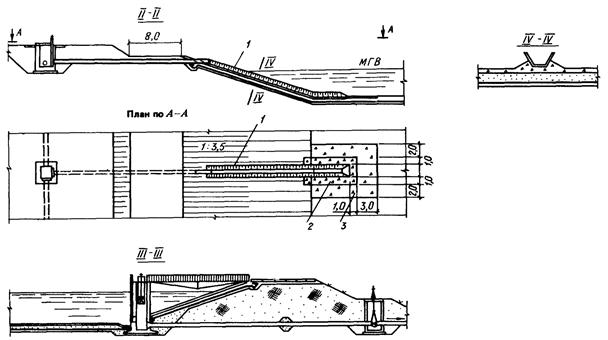
Черт. 6. Экран из полиэтиленовой пленки однослойный.
Разрезы II-II, III-III, IV-IV
1 - лоток из сборных железобетонных блоков; 2 - щебень с проливкой цементным раствором; 3 - щебень
Черт. 7. Экран из полиэтиленовой пленки однослойный. Узлы
а - деталь пропуска стальной трубы через экран из полиэтиленовой пленки на откосе; б - деталь пропуска железобетонной трубы через экран из полиэтиленовой пленки; в - сопряжение пленочного экрана с бетонными и железобетонными сооружениями; 1 - сборный железобетонный лоток; 2 - полиэтиленовая пленка экрана, приклеиваемая к диафрагме битумной мастикой БКС или УМС-50; 3 - стальная диафрагма, привариваемая к трубе сплошным швом; 4 - монолитная железобетонная плита; 5 - липкая лента (для надежности сопряжения после приклейки основных полотнищ щели в пленке по углам башни заделываются наклейкой липкой ленты в 2 - 3 слоя); 6 - плита, покрываемая битумной мастикой, на которую затем наклеивается пленка; 7 - натирка бетонной поверхности цементным раствором М-100 с последующей окраской мастикой БКС или УМС-50 и наклейкой пленки
5.12. При двухслойном экране (черт. 8) промежуточный (дренажный) слой устраивается из качественного песка слоем 0,5 м. Нижний и верхний защитные слои выполняются как для однослойного экрана.
Сопряжение полиэтиленового экрана с сооружениями и коммуникациями является одним из наиболее ответственных мест противофильтрационного устройства. Пленка в районе бетонных опор и труб приклеивается к ним горячей битумной мастикой, которую одновременно наносят на тщательно очищенный бетон или металл и края пленки. Ширина полосы наносимой мастики не менее 15 - 20 см. Места соединения пленки тщательно прокатывают деревянным валиком.
Для приклеивания пленки применяют мастику, приготовляемую следующим образом: битум марки БН-4 разогревают до жидкого состояния, добавляют в него 5 % (по массе) резиновой крошки и варят эту смесь в течение часа, тщательно перемешивая. После охлаждения до 120 - 110 °С в смесь малыми дозами, во избежание воспламенения, добавляют, тщательно перемешивая, 5 % солярного масла. Затем мастику следует несколько охладить и проверить, не прожигает ли она пленку. После чего мастика готова к употреблению.
5.13. При проектировании полигонов для захоронения токсичных отходов и испарителей вредных стоков могут применяться следующие типы противофильтрационных завес:
вертикальная глиняная диафрагма, выполняемая методом «стена в грунте» (черт. 9);
грунтовая диафрагма «стена в грунте» в сочетании с полиэтиленовой пленкой (черт. 10):
комбинированная завеса, состоящая из глиняной диафрагмы («стена в грунте») в сочетании с дренажом (черт. 11, 12);
глиняная завеса в виде «зуба», выполняемого в открытой траншее (черт. 13);
глиняная завеса в виде «зуба» в сочетании с полиэтиленовой пленкой (черт. 13);
цементационная завеса (черт. 14);
дренажные завесы (черт. 15): в виде открытого канала; в виде закрытой трубчатой дрены; в виде ряда вертикальных скважин;
комбинированные дренажные завесы (траншея и самоизливающиеся в нее скважины; закрытая дрена и самоизливающиеся в нее скважины).
Проектируются завесы с использованием соответствующих инструкций и норм. Завесы конкурируют с экранами; выбор завесы или экрана решается технико-экономическими расчетами.
Преимуществом завес является возможность их строительства на эксплуатируемых сооружениях, а также при больших площадях водоемов или карт для захоронения отходов и близком залегании водоупора, когда экраны явно не экономичны.
Черт. 8. Экран из полиэтиленовой пленки двухслойный
1 - секция пруда-испарителя; 2 - водовыпуски стоков; 3 - дренажная насосная станция со щитом КИП; 4 - дрены; 5 - трубопровод от завода; 6 - дрена
Черт. 9. Вертикальная глиняная диафрагма «стена в грунте» (размеры в метрах)
Черт. 10. Грунтовая диафрагма «стена в грунте» в сочетании с полиэтиленовой пленкой
1 - местный грунт; 2 - песок, супесь или суглинок; 3 - полиэтиленовая пленка в 1 - 2 слоя; 4 - дрена; 5 - водоупор; 6 - диафрагма из глины или супеси с пленкой
Черт. 11. Комбинированная завеса «стена в грунте» в сочетании с дренажом
1 - испаритель промышленных стоков; 2 - дренажная насосная станция № 1; 3 - контрольные скважины; 4 - дренажная насосная станция № 2; 5 - ось глиняной диафрагмы; 6 - дренажная насосная станция № 3; 7 - гидроизогипсы; 8 - ось дрены; 9 - дренажная насосная станция №4; 10 - дренажная насосная станция №5; 11 - промышленные площадки; 12 - гребень дамбы; 13 - линия поверхности земли; 14 - линия планировки при производстве работ; 15 - линия поверхности грунтовых вод; 16 - линия подошвы глиняной диафрагмы; 17 - линия поверхности глиняного водоупора
Черт. 12. Комбинированная завеса «стена в грунте» в сочетании с дренажом. Разрезы. Узлы
а - деталь оголовка диафрагмы при строительстве в выемке; б - деталь оголовка диафрагмы при строительстве на ровной поверхности; 1 - пруд-испаритель; 2 - водоупор; 3 - поверхность грунтовых вод до постройки испарителя; 4 - дрена; 5 - завод; 6 - пригрузка местным грунтом; 7 - диафрагма; 8 - спланированное основание; 9 - насыпь из местного грунта; 10 - оголовок диафрагмы при строительстве; 11 - кривая депрессии при отсутствии дрены; 12 - кривая депрессии при наличии дрены
Черт. 13. Глиняная завеса в виде «зуба»
а - сопряжение глиняного «зуба» с телом плотины (тип 1); б - сопряжение глиняного «зуба» с полиэтиленовой диафрагмой в теле плотины (тип 2); в - сопряжение глиняного «зуба» с полиэтиленовым экраном плотины (тип 3); 1 - дрена; 2 - ядро из глины; 3 - водоупор; 4 - зуб; 5 - полиэтиленовая пленка в 1 - 2 слоя
Черт. 14. Цементационная завеса. Узлы сопряжений
а - сопряжение цементационной завесы с глиняным ядром плотины (тип 1); б - сопряжение цементационной завесы с полиэтиленовой диафрагмой в теле плотины (тип 2); в - сопряжение цементационной завесы с пленочным экраном плотины (тип 3); 1 - глиняное ядро; 2 - скала выветрелая; 3 - цементационная завеса; 4 - поверхность плотной скалы; 5 - цементационные скважины; 6 - обсыпка пленки качественной супесью или песком; 7 - диафрагма из полиэтиленовой пленки, стабилизированной сажей, в 1 - 2 слоя; 8 - скала устойчивая (Kf = 0,01 м/сут); 9 - бетонный оголовок; 10 - крепление откоса земляной плотины; 11 - экран из полиэтиленовой пленки в 1 - 2 слоя; 12 - просеянный песок для защиты пленки
Черт. 15. Дренажные завесы
а - дренажная завеса в виде открытых каналов; б - дренажная завеса в виде горизонтальных дрен; в - дренажная завеса в виде ряда скважин; г - комбинированная дренажная завеса; 1 - дренажный канал; 2 - магистральный канал; 3 - естественный уровень грунтовых вод; 4 - трубчатая дрена; 5 - испаритель; 6 - уровень грунтовых вод до постройки сооружения; 7 - насосная станция; 8 - ряд взаимодействующих дренажных скважин; 9 - горизонтальная трубчатая дрена (откачка грунтовой воды из дрен производится с помощью обычных водопроводных насосных станций); 10 - водоем
5.14. Глиняные диафрагмы типа «стена в грунте» толщиной 50 - 110 см устраиваются как в сухих, так и обводненных супесчаных, песчаных и гравийно-песчаных грунтах (без валунов) при глубинах до водоупора 6 - 50 м и уровне грунтовых вод не выше 1,5 м от поверхности земли.
5.15. Диафрагма «стена в грунте» в сочетании с полиэтиленовой пленкой в один или два слоя устраивается в тех же условиях, что и глиняные диафрагмы, когда предъявляются более жесткие требования по предотвращению утечек из хранилищ вредных стоков. Такая завеса считается нефильтрующей.
5.16. Комбинированная завеса, состоящая из глиняной диафрагмы («стена в грунте») в сочетании с дренажом, применяется в тех же природных условиях, что и предыдущие, и гарантирует полное предотвращение утечек из емкостей с особо вредными стоками. Рекомендуется дрену располагать между урезом воды в емкости и глиняной диафрагмой, создавая по возможности некоторое превышение уровня естественной грунтовой воды за диафрагмой над уровнем загрязненной грунтовой воды со стороны емкости, образуя противодавление чистой воды. Откачиваемая дренажная вода вновь подается в емкость.
5.17. Глиняная завеса в виде «зуба» применяется в любых грунтах при глубине фильтрующей толщи до водоупора не более 6,0 м.
5.18. «Зуб» из глины или суглинка в сочетании с полиэтиленовой пленкой применяется также на глубину до 6,0 м, когда в районе строительства нет достаточного количества глинистых грунтов.
5.19. Цементационная завеса, как правило, применяется для предотвращения фильтрации в скальных и полускальных трещиноватых породах практически на любую глубину.
5.20. Дренажная завеса в виде открытой траншеи применяется в сравнительно однородных грунтах с безнапорным режимом грунтовых вод на глубину до 5,0 м.
Дренажная завеса в виде закрытой трубчатой дрены применяется в тех же условиях, что и открытая дрена, на землях, используемых в сельском хозяйстве.
Дренажная завеса в виде ряда вертикальных скважин, оборудованных насосами, устраивается при глубоком залегании водоупора или его отсутствии, когда верхний горизонт на глубину до 6,0 м сложен слабофильтрующими грунтами, а подтопление происходит через более глубокие слои.
Комбинированные дренажные завесы (горизонтальные открытые или закрытые дрены в сочетании с самоизливающимися в эти дрены скважинами) применяются в сложных гидрогеологических условиях при слоистом строении водоносных пород, когда грунтовые воды на отдельных участках могут быть напорными, а все другие мероприятия - трудновыполнимы и неэкономичны.
5.21. Пластовый дренаж, часто совместно с пристенным, является наиболее надежным способом защиты от затопления грунтовыми водами заглубленных сооружений и выполняется при строительстве в неблагоприятных гидрологических условиях.
Конструктивно пластовый дренаж представляет собой сплошную постель из одного или двух слоев фильтрующего материала - песка и гравия (щебня), уложенных с уклоном в сторону сборных трубчатых дрен. Минимальная толщина слоя песка 10 см, гравия или щебня - 15 см.
Однослойный фильтр из гравия устраивается на скальном основании.
Каждый слой уплотняется легким катком за 2 - 3 прохода. Точность планировки поверхности котлована и дренажных слоев после уплотнения ±5 см.
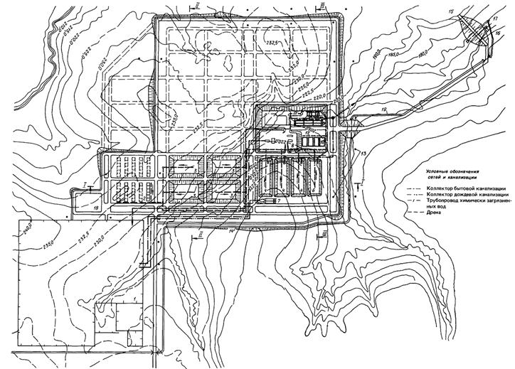
Черт. 20. Участок захоронения неутилизируемых промышленных отходов. Генплан
1 - завод по обезвреживанию и утилизации токсичных промышленных отходов; 2 - бункера для захоронения особо токсичных отходов; 3 - карты для захоронения сухих отходов II и III классов опасности; 4 - контрольно-регулирующие пруды дождевых вод; 5 - контрольно-регулирующие емкости дренажных вод; 6 - регулирующая емкость загрязненных дождевых и дренажных вод; 7 - песколовка-нефтесборник; 8 - очистные канализационные сооружения; 9 - биопруды; 10 - иловые площадки; 11 - насосная станция перекачки загрязненных стоков на завод; 12 - дренажная насосная станция; 13 - контрольные скважины; 14 - нагорная канава; 15 - плотина; 16 - насосная станция промышленной воды; 17 - хлораторная; 18 - стройплощадка для приготовления асфальтополимербетона и бетона; 19 - обводное русло
5.22. Пластовый дренаж применяется в слабофильтрующих (коэффициент фильтрации Кf = 5 м/сут) обводненных или подверженных обводнению после строительства грунтах - суглинках, супесях, мелкозернистых песках; в трещиноватых скальных и полускальных породах, обладающих локальной водоносностью.
В этих условиях другие методы борьбы с грунтовыми водами неэффективны.
Если сооружение врезается в водоупор, то устраивается только боковой (пристенный) дренаж с расположением сборной (кольцевой) дрены ниже подошвы фундамента.
Ослабленные увлажненные основания усиливаются уплотнением с добавлением щебня.
5.23. Заглубление пластового дренажа определяется вертикальной привязкой сооружения. Площадь котлована под сооружение определяется контурами намечаемого пластового дренажа. Суммарный приток к пластовому дренажу равен притоку в котлован, дном которого является подошва пластового дренажа.
Приток в котлован рассчитывается по соответствующей методике, применяемой в гидрогеологии при максимальном прогнозном уровне грунтовых вод на площадке (авторы формул: Дюпюи, Форхгеймер, Абрамов, Бабушкин и др.).
При глубоком заложении водоупора от дна котлована - более 5,0 м, сравнительно небольшой глубине грунтовой воды над дном - до 3,0 - 4,0 м весь водоприток можно учитывать через дно с равномерным поступлением по площади пластового дренажа (при одинаковом коэффициенте фильтрации основания на участке).
Исходя из полученного водопритока в котлован Q, м3 /сут, находим расход воды Q1 в конце выделенной полосы пластового дренажа шириной 1,0 м, длиной L, м, и равной максимальной длине наклонной плоскости дренажа, тяготеющей к водосборной дрене (см. черт. 16).
Черт. 16. Расчетная схема пластового дренажа
1 - подземные сооружения; 2 - щебень; 3 - песок
Q1 = qL, где 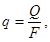
здесь q - удельный приток на 1 м2 дна котлована;
F - площадь котлована, м2.
При горизонтальном днище сооружения величина L принимается не более 30,0 м; при наклонных днищах, соответствующих уклону пласта, величина L может быть увеличена до 50,0 м.
Полученный расход Q1 в конце полосы шириной 1,0 м должен быть меньше ее пропускной способности, которая может быть проверена по формуле Дарси
Q = wKfi,
где w - площадь сечения, м2, слоя фильтра шириной полосы 1,0 м;
Kf - коэффициент фильтрации гравия, принимаемый для фракций:
d50 = 10 мм ...................... 200 м/сут
d50 = 20 мм ...................... 500 м/сут
i = 0,01 - рекомендуемый уклон пластового дренажа.
Диаметр сборных дренажных труб выбирается по расходу воды, поступающей в трубу с площади пластового дренажа, тяготеющей к дрене. Минимальный диаметр дренажных труб - 150 мм.
Трубы могут быть полиэтиленовыми, керамическими, бетонными, железобетонными и др. Вода поступает через боковые отверстия диаметром 10 - 12 мм в количестве 1 - 2 % общей боковой поверхности трубы или через стыки метровых отрезков труб, укладываемых с зазором 10 - 20 мм. При этом 1/3 периметра стыка лотковой части заделывается герметиком.
При устройстве перфорации 1/3 лотковой части не перфорируется. Уклон дренажных труб назначается в пределах 0,002 - 0,005. Смотровые колодцы размещаются так же, как на канализационных коллекторах.
По условиям исключения выноса грунта из-под сооружения сборную дрену следует устраивать не ближе 3,0 м от края фундамента, возможное заглубление дрены ниже подошвы фундамента следует устанавливать соответствующими расчетами.
По сторонам, где нет сборных дрен, контур пластового дренажа должен выступать от фундамента не менее чем на 0,5 м.
6.1. Герметичность экранов контролируется различными способами в зависимости от гидрогеологических условий территории и конструкции экрана.
При экранах, устраиваемых на слабофильтрующих грунтах с Кf < 5 м/сут с относительно высоким уровнем стояния грунтовых вод (до 1,0 м) и небольших уклонах грунтового потока, когда возможен подъем уровня грунтовых вод с подпором экрана, контроль за герметичностью осуществляется путем отбора проб воды на химический анализ из дренажных колодцев, в которые поступает вода от дренажа.
При глубоком залегании уровня грунтовых вод и сравнительно высоком коэффициенте фильтрации грунтов Kf > 5 м/сут контроль за герметичностью экрана осуществляется путем отбора проб грунтовых вод на химический анализ из контрольных скважин, располагаемых по контуру в направлении оттока грунтовых вод.
6.2. При двухслойных экранах, когда между слоями устраивается дренаж, герметичность верхнего слоя контролируется путем нагнетания через дренаж воздуха, который в виде пузырьков будет выступать на поверхность воды, или путем установки в межслойном пространстве электрических датчиков.
6.3. Контроль герметичности верхнего слоя экрана (при двухслойном экране) производится с помощью электрических датчиков.
Сущность способа заключается в следующем: под рабочим экраном в дренажном слое по сетке укладываются изолированные проводники, в местах пересечения которых устанавливаются датчики, фиксирующие наличие профильтровавшихся промышленных стоков. Створы датчиков электроконтроля закреплены в натуре по контуру пруда маркировочными столбиками с номерами. Сигнал о наличии жидкости в месте установки датчика передается в помещение КИП, располагаемое вблизи пруда.
На черт. 17 показаны блок-схема (на одну секцию пруда) электрического устройства контроля целостности экрана и конструкции датчика.
7.1. Примерный перечень токсичных отходов, поступающих на полигон, приведен в рекомендуемом приложении 1 СНиП 2.01.28-85.
Черт. 17. Контроль герметичности верхнего слоя при двухслойном экране
1 - противофильтрационный экран; 2 - датчик, фиксирующий наличие промышленных стоков; 3 - поисковая система; 4 - контролирующее устройство; 5 - выходной релейный орган; 6 - источник питания
На черт. 18 - 30 и в табл. 3 - 7 приведены основные сведения и технико-экономические показатели полигона мощностью 140,6 тыс. т отходов в год с расположением всех сооружений на общей площадке в сложных природных условиях:
рельеф сильно изрезан оврагами с перепадом высот до 30 м;
в основании на глубину до 10-20 м залегают суглинки, ниже - переслаивающиеся супеси, суглинки, линзы песка и глин; на глубине от 60 до 100 м эти грунты подстилаются глинами слоем 10 - 30 м;
Таблица 3
|
Мощность |
|||
|
т/ч |
т/сут |
т/год |
|
|
Твердые токсичные горючие |
6,15 |
147,7 |
40000 |
|
Жидкие органические горючие (нефтепродукты, растворители, масла, не подлежащие регенерации) |
1,23 |
29,54 |
8000 |
|
Пастообразные горючие органические и шламы |
1,31 |
31,44 |
8500 |
|
Пастообразные горючие органические в барабанах или бочках вместимостью до 200 л |
0,23 |
5,52 |
1500 |
|
Сточные воды |
1,54 |
36,96 |
10000 |
|
Пар давлением 2,4 МПа с температурой 280 °С, передаваемый в теплопункт |
40,5 |
972,0 |
263250 |
|
Зола и шлак, транспортируемые на захоронение |
1,25 |
30,05 |
8138 |
|
Продувочные воды оборотных систем |
12,96 |
311,0 |
84230 |
|
Продувочные воды котлов-утилизаторов |
3,42 |
82,0 |
22208 |
Черт. 18. Ситуационный план полигона по обезвреживанию и захоронению токсичных промышленных отходов (M 1:25000)
1 - сооружения хозяйственно-питьевого водоснабжения; 2 - завод по обезвреживанию и утилизации токсичных промышленных отходов; 3 - участок захоронения неутилизируемых промышленных отходов; 4 - очистные сооружения бытовой канализации; 5 - пруд дождевых вод; 6 - насосная станция промышленной воды; 7 - плотина; 8 - жилой поселок; 9 - подстанция 110/35 кВ; 10 - граница санитарно-защитной зоны; 11 - подъездная автодорога
грунтовые воды - верховодка на глубине 1,5 - 5,0 м имеют периодический и местами линзовый характер; постоянный горизонт воды глубиной 15 - 25 м с уклоном в северном направлении;
воды слабо минерализованы;
коэффициенты фильтрации грунтов, м/сут:
суглинки .................................. 0,05 - 0,5
супеси ....................................... 0,2 - 2,0
пески ........................................ 0,5 - 10,0
глины ....................................... 0,1 - 0,01
высококачественные глины с коэффициентом фильтрации менее 0,001 м/сут в регионе отсутствуют.
7.2. Исходя из анализа гидрогеологических условий площадки с учетом требований СНиП 2.01.28-85 под картами и бункерами для захоронения отходов, а также под другими емкостными сооружениями предусматриваются водонепроницаемые экраны, а для исключения подтопления экранов грунтовыми водами - пластовые дренажи. Другие способы борьбы с подтоплением в данных условиях неэффективны.
7.3. Учитывая, что грунтовые воды в 7 км ниже полигона используются для питьевых целей, наблюдательные скважины с низовой стороны запроектированы с учетом возможности оборудования их артезианскими насосами для создания дренажной завесы, исключающей отток грунтовых вод ниже полигона.
7.4. В прил. 4 - 6 приведены примеры компоновки участка захоронения неутилизируемых промышленных отходов на спокойном рельефе (прил. 4), рекомендации по штатам (прил. 5) и режиму контроля химического состава дождевых и грунтовых вод (прил. 6).
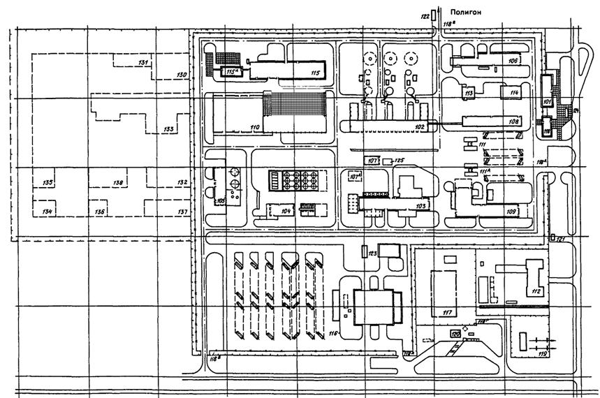
Черт. 19. Завод по обезвреживанию и утилизации токсичных промышленных отходов. Генплан (M l:1000)
1-я очередь строительства; 101 - административный корпус; 102 - термическое обезвреживание твердых отходов; 103 - термическое обезвреживание жидких отходов; 104 - склад жидких отходов и реагентов; 105 - приготовление известкового молока и склад хлористого кальция вместимостью 2´1000 м3; 106 - азотно-кислородная станция, компрессорная сжатого воздуха, водооборотная система; 107, 107а - механизированная мойка спецмашин и контейнеров и очистные сооружения; 108 - лабораторно-бытовой корпус и щитовая КИП; 109 - котельная с химической водоочисткой и бойлерной; 110 - склад оборудования и материалов; 111, 111a - автовесы; 112 - пожарное депо на 4 выезда; 113 - магазин; 114 - столовая на 155 посадочных мест; 115 - блок ремонтных мастерских; 115а - лесопильный участок; 116 - гараж с техобслуживанием на 150 спецмашин и открытой стоянкой; 117 - гараж с техобслуживанием на 50 автомашин и автобусов хозяйственного назначения; 118 - контрольно-проходной пункт с бюро пропусков; 118а, б, в, г - контрольно-проездные пункты; 118д - контрольно-проходной пункт; 119 - подстанция 35/10 кВ с распределительным устройством 10 кВ; 120 - автозаправочная станция; 121 - газораспределительный пункт; 122 - мойка автомашин; 123 - водооборотная система; 124 - автопавильон
2-я очередь строительства: 130 - физико-химическое обезвреживание отходов гальванических производств; 131 - физико-химическое обезвреживание химических отходов; 132 - склад хранений растворов; 133 - обезвреживание ртутных и люминесцентных ламп; 134 - обезвреживание испорченных немаркированных баллонов; 135 - погребок хранения материалов; 136 - блиндаж; 137 - спецпрачечная; 138 - открытый склад хранения изолирующих материалов для карт
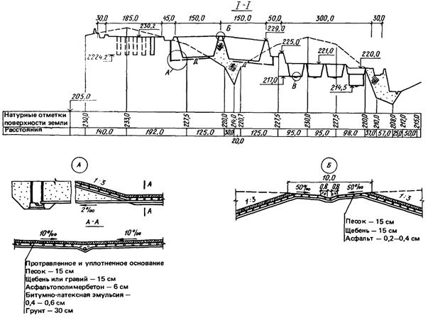
Черт. 21. Участок захоронения неутилизируемых промышленных отходов. Разрез I-I. Узлы А, Б
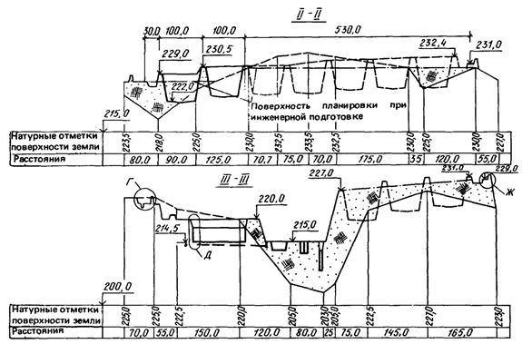
Черт. 22. Участок захоронения неутилизируемых промышленных отходов. Разрезы II-II, III-III
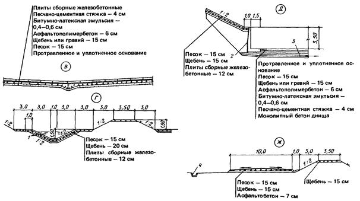
Черт. 23. Участок захоронения неутилизируемых промышленных отходов. Узлы В, Г, Д, Ж
1 - нагорная канава чистой воды; 2 - битумные маты - 10 мм; 3 - дрена Д-150; 4 - ливнеотводной лоток
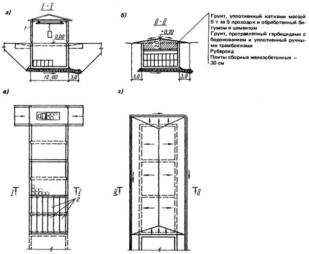
Черт. 24. Бункер для захоронения особо токсичных отходов
а - бункер при закладке отходов; б - бункер после захоронения отходов; в - план на отм. 0,00; г - план на отм. +0,70; 1 - сборно-разборное металлическое ограждение; 2 - сборные железобетонные плиты перекрытия
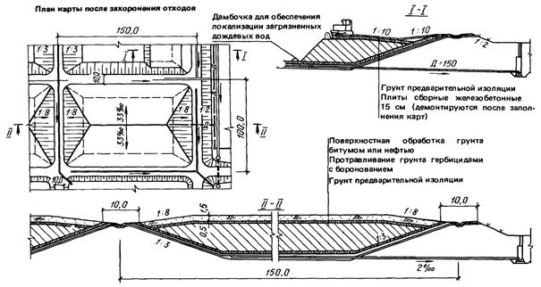
Черт. 25. Карты для захоронения отходов
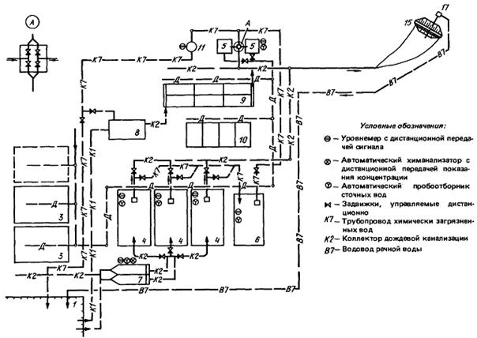
Черт. 26. Схема диспетчерского контроля и управления бригады ОХОС (наименования сооружений см. на черт. 20)
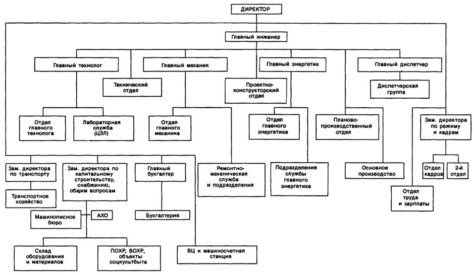
Черт. 27. Организационная схема управления полигоном
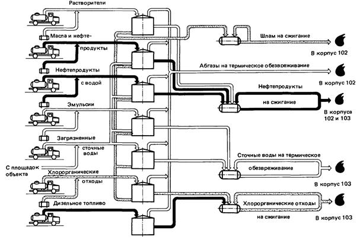
Черт. 28. Схема приема и распределения жидких токсичных отходов на термическое обезвреживание
Таблица 4
|
Показатели |
Единица измерения |
Мощность |
||
|
часовая |
суточная |
годовая |
||
|
Хлорорганические отходы |
т |
1,5 |
36,0 |
12000 |
|
Жидкие нефтепродукты |
т |
1,0 |
24,0 |
8000 |
|
Сточные воды, в том числе собственные |
т т |
5,0 2,5 |
120,0 60,0 |
40000 20000 |
|
Пар насыщенный, передаваемый в теплопункт |
т ГДж |
20,5 57,2 |
492,0 1372,8 |
164000 457600 |
|
38 %-ный раствор хлористого кальция |
т |
6,2 |
149,8 |
49920 |
|
Минеральная пыль, вывозимая на полигон захоронения отходов |
т |
0,2 |
4,8 |
1600 |
|
Расход природного газа |
тыс. м3 |
1,3 |
30,7 |
10240 |
|
Расход электроэнергии |
тыс. кВт-ч |
0,9 |
20,4 |
6792 |
|
Расход азота технологического |
м3 |
92,0 |
2208,0 |
736000 |
|
Расход химочищенной воды |
т |
6,5 |
156,0 |
52000 |
|
Расход оборотной воды |
тыс. м3 |
0,44 |
10,5 |
3504 |
|
Расход производственной воды |
м3 |
6,0 |
144,0 |
48000 |
|
Расход конденсата возвратного |
т ГДж |
14,5 5,4 |
348,0 129,6 |
116000 43200 |
|
Расход щелочи |
кг |
14,0 |
336,0 |
112000 |
|
Расход формиата натрия |
кг |
10,0 |
240,0 |
80000 |
|
Расход 10 %-ной суспензии Са(ОН)2 в 38 %-ном растворе СаСl2 |
т |
4,8 |
115,7 |
38560 |
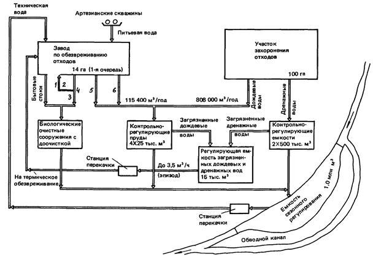
Черт. 29. Принципиальная схема водопотребления и водоотведения полигона по обезвреживанию и захоронению токсичных промышленных отходов
1 - на термическое обезвреживание; 2 - 20-минутный дождь; 3 - 1000 м3/год; 4 - дождевые воды с отбортованных площадок; 5 - дождевые воды с автодорог; 6 - дождевые воды с крыш
|
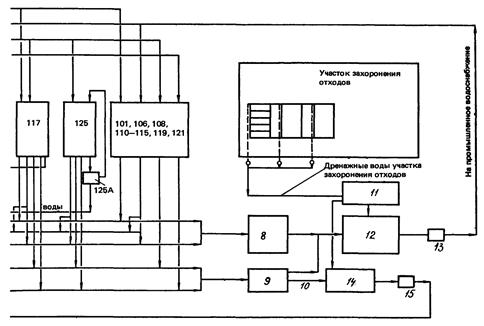 |
Черт. 30. Схема водопотребления, водоотведения и повторного использования сточных вод полигона по обезвреживанию и захоронению токсичных промышленных отходов
1 - первые порции дождевых вод с отбортованных площадок; 2 - соль на захоронение; 3 - известковое молоко; 4 - продувка котлов; 5 - на сжигание; 6 - дождевые воды с отбортованных площадок; 7 - шлам после обезвреживания на захоронение; 8 - биологические очистные сооружения с доочисткой; 9 - контрольно-регулирующие пруды; 10 - загрязненные дождевые воды; 11 - контрольно-регулирующие емкости; 12 - емкость сезонного регулирования; 13 - насосная станция; 14 - регулирующая емкость загрязненных дождевых и дренажных вод; 15 - станция перекачки; 101 - административный корпус; 102 - термическое обезвреживание твердых отходов; 103 - термическое обезвреживание жидких отходов; 104 - склад жидких отходов и реагентов; 105 - приготовление известкового молока и склад хлористого кальция вместимостью 2´1000 м3; 106 - азотно-кислородная станция, компрессорная сжатого воздуха, водооборотная система; 107, 107а - механизированная мойка спецмашин и контейнеров и очистные сооружения; 108 - лабораторно-бытовой корпус и щитовая КИП; 109 - котельная с химической водоочисткой и бойлерной; 110 - склад оборудования и материалов; 111, 111a - автовесы; 112 - пожарное депо на 4 выезда; 113 - магазин; 114 - столовая на 155 посадочных мест; 115 - блок ремонтных мастерских; 115а - лесопильный участок; 116 - гараж с техобслуживанием на 150 спецмашин и открытой стоянкой; 117 - гараж с техобслуживанием на 50 автомашин и автобусов хозяйственного назначения; 119 - подстанция 35/10 кВ с распределительным устройством -10 кВ; 121 - газораспределительный пункт; 125, 125а - механизированная мойка спецмашин и контейнеров и очистные сооружения
Таблица 5
|
Сооружение |
Продолжительность выброса |
Номер корпуса |
Единица измерения |
Вредные вещества |
||||||||||||
|
пыль (класс опасности) |
органические (класс опасности) |
Органические в пересчете на С |
СО |
HCl |
HF |
SO2 |
Сl2 |
NО2 |
||||||||
|
I |
II |
Ш |
I |
II |
III |
|||||||||||
|
(Cd; Hg; TL и их соединения) |
(As; Cr; Co; Ni и их соединения) |
(Рb; Сu; Мn; V и их соединения) |
||||||||||||||
|
Установка термического обезвреживания твердых, жидких и пастообразных отходов |
Постоянно |
102 |
кг/ч |
0,02 |
0,11 |
0,55 |
2,2 |
10,9 |
16,4 |
2,2 |
8,75 |
5,5 |
0,2 |
21,9 |
- |
- |
|
Установка термического обезвреживания жидких отходов |
То же |
103 |
кг/ч |
- |
- |
1,4 |
- |
- |
- |
- |
0,83 |
0,03 |
- |
0,83 |
1,9 |
|
|
Гараж с техническим обслуживанием 150 спецмашин и открытой стоянкой |
Периодически -8 ч/сут. |
116 |
кг/ч |
- |
- |
- |
- |
- |
- |
- |
0,53 |
- |
- |
- |
- |
0,114 |
|
Гараж с техническим обслуживанием 50 автомашин и автобусов хозяйственного назначения |
Периодически -4 ч/сут. |
117 |
кг/ч |
- |
- |
- |
- |
- |
- |
- |
8,60 |
- |
- |
- |
- |
0,27 |
|
Мойка автомашин с очистными сооружениями (на заводе) |
Периодически - 10 ч/сут. |
122 |
кг/ч |
- |
- |
- |
- |
- |
- |
- |
0,76 |
- |
- |
- |
- |
0,22 |
|
Пост мойки автомашин (на участке захоронения) |
Периодически - 1 ч/сут. |
117а |
кг/ч |
- |
- |
- |
- |
- |
- |
- |
0,78 |
- |
- |
- |
- |
0,053 |
Таблица 6
|
Показатель |
Величина |
|
|
Мощность объекта по обезвреживанию и захоронению отходов, тыс. т/год: |
140,6 |
|
|
в том числе: |
||
|
сжигание: |
||
|
твердых, пастообразных и жидких |
58,0 |
|
|
жидких хлорорганических |
12,0 |
|
|
сточных вод с органическими и минеральными соединениями |
30,0 |
|
|
захоронение отходов классов опасности: |
||
|
растворимых I и II |
0,6 |
|
|
нерастворимых II и III |
40,0 |
|
|
Капитальные вложения, млн руб.: |
||
|
всего |
109,1 |
|
|
в том числе: |
32,18 |
|
|
строительно-монтажные работы (СМР) оборудование |
34,04 |
|
|
прочие затраты |
17,7 |
|
|
жилищно-гражданское строительство: |
13,74 |
|
|
в том числе СМР |
11,44 |
|
|
Потребность в сырье (известь), т/год |
6300 |
|
|
Потребность в электроэнергии, млн кВт-ч/год |
43,0 |
|
|
Потребность в свежей воде, тыс. м3/год |
988,0 |
|
|
Потребность в природном газе, млн м3/год |
29,0 |
|
|
Побочная продукция: |
||
|
пар насыщенный, МВт |
48,8 |
|
|
раствор хлористого кальция, тыс. т/год |
15,0 |
|
|
кислород в баллонах, тыс. м3/год |
218,1 |
|
|
Штаты объекта (чел.): |
1188 |
|
|
в том числе автохозяйства |
643 |
|
|
Стоимость обезвреживания 1 т отходов, руб.: |
||
|
горючих, твердых, жидких и пастообразных |
74 (63,4)* |
|
|
жидких негорючих |
18,8 (9,7)* |
|
|
Стоимость захоронения 1 т отходов, руб., классов опасности: |
||
|
растворимых I и II |
124,38 |
|
|
нерастворимых II и III |
17,90 |
*В случае передачи всего насыщенного пара сторонним потребителям.
Таблица 7
|
Величина |
|
|
1. Годовое поступление отходов классов опасности: |
|
|
I-II - в герметических контейнерах для захоронения в бункерах, т |
630 |
|
3II-III - для захоронения в картах, м3 |
57400 |
|
2. Расчетный срок работы полигона, лет |
20 |
|
3. Общая стоимость СМР по объектным сметным расчетам, тыс. руб.: |
11400,34 |
|
в том числе: |
|
|
инженерная подготовка |
2069,62 |
|
бункеры и карты захоронения отходов в течение трех лет |
1470,18 |
|
промышленное водоснабжение |
2772,57 |
|
дождевая канализация |
1973,35 |
|
дренаж |
199,83 |
|
контрольно-наблюдательные скважины |
440,69 |
|
прочие (электрическая часть, КИП, кольцевая автодорога и дамба, ограждение, коммуникации и промышленная площадка) |
2470,10 |
|
4. Ежегодные затраты (после трех лет) на устройство бункеров из трех секций и одной карты, тыс. руб. |
735,08 |
|
5. Годовая зарплата эксплуатационного персонала с начислениями на социальное страхование, тыс. руб. |
150,22 |
|
6. Реагенты (хлор), тыс. руб. |
0,063 |
|
7. Электроэнергия, тыс. руб. |
39,99 |
|
8. Текущий ремонт, тыс. руб. |
94,40 |
|
9. Ежегодные отчисления на амортизацию, тыс. руб. |
355,40 |
|
10. Прочие расходы 20 % от поз. 5 - 9, тыс. руб. |
128,015 |
|
11. Годовые эксплуатационные затраты (по поз. 4 - 10), тыс. руб. |
1503,168 |
|
12. Себестоимость захоронения 1 м3 отходов, руб. |
25,966 |
|
13. Суммарные капитальные вложения (СМР) за 20 лет |
28676,04 |
|
14. Объем захоронения отходов за 20 лет, тыс. м3 |
1138,80 |
|
15. Осредненные удельные капитальные вложения на 1 м3 захоронения отходов, руб. |
25,18 |
|
16. Себестоимость захоронения 1 т особо вредных растворимых отходов I-II классов опасности, руб. |
124,38 |
|
17. Себестоимость захоронения 1 м3 сухих отходов II-III классов опасности, руб. |
24,82 |
|
18. Себестоимость 1 м3 промышленной воды, коп. |
29,19 |
ОПРОСНЫЙ ЛИСТ
|
||||||||||||||||||||||||||||||||||||||||||||||||||||||||||||||||
|
№ п.п. |
Отходы |
Количество, т/год |
Периодичность поступления на полигон |
Класс опасности |
Физическое состояние |
Влажность, % по массе |
Составляющие компоненты (химическая формула) |
Содержание компонента, % по массе |
Насыпной вес или плотность, кг/м3 |
Транспортабельность по трубопроводу или слеживаемость (да, нет) |
Температура, °С |
Коррозионная способность |
Теплотворная способность, кДж/кг (ккал/кг) |
Вид тары (упаковки) |
Рекомендуемый метод обезвреживания и захоронения |
Краткое описание мер безопасности обращения с отходами |
|||
|
плавления |
кипения |
воспламенения |
вспышки |
||||||||||||||||
|
1 |
2 |
3 |
4 |
5 |
6 |
7 |
8 |
9 |
10 |
11 |
12 |
13 |
14 |
15 |
16 |
17 |
18 |
19 |
20 |
|
|
|
|
|
|
|
|
|
|
|
|
|
|
|
|
|
|
|
|
|
ПАСПОРТ
|
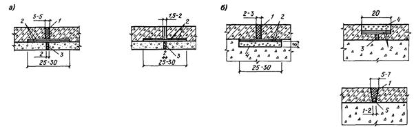
а - для монолитного железобетона; б - для железобетонных или полимербетонных плит; 7 - битумно-полимерный герметик «Битэп» (БР-М, БКД-М); 2 - асфальтовый мат на стеклоткани по ГОСТ 8481-75; 3 - деревянная антисептированная доска; 4 - сборная железобетонная или полимербетонная плита; 5 - жгут из гернита или пороизола
Примечание. Размеры даны в сантиметрах.
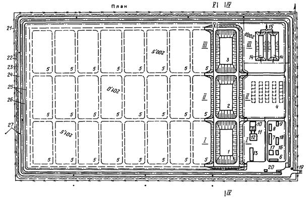
Продолжение прил. 4
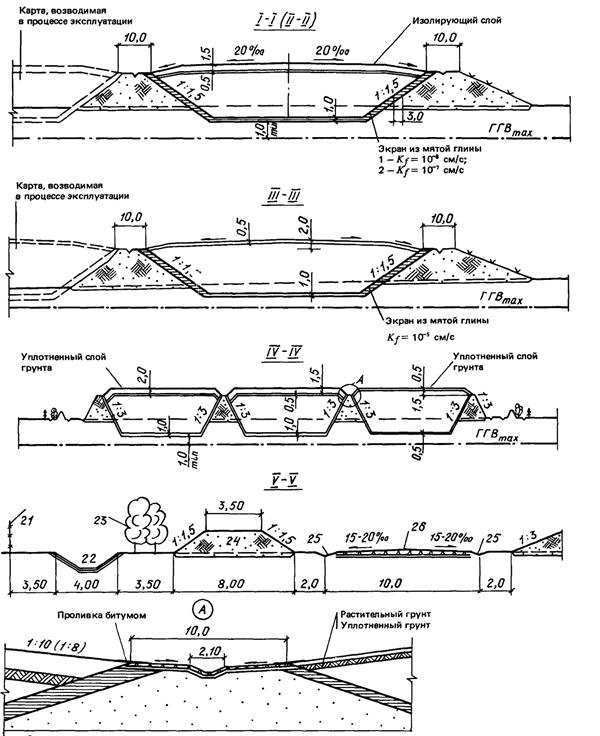
1 - карты захоронения нерастворимых отходов I класса опасности и растворимых отходов II и III классов опасности; 2 - карты для захоронения нерастворимых отходов II и III классов опасности; 3 - карты для захоронения отходов IV класса опасности; 4 - железобетонные бункеры для захоронения растворимых отходов I класса опасности в контейнерах; 5 - карты для захоронения отходов, возводимые в процессе эксплуатации полигона; 6 - административно-хозяйственный корпус с лабораторией; 7 - навес для спецмашин и механизмов; 8 - ремонтная мастерская; 9 - склад горюче-смазочных материалов; 10 - корпус для мойки спецмашин и контейнеров; 11 - грязеотстойники с нефтеловушками; 12 - отстойник оборотной воды корпуса мойки; 13 - склад материалов, используемых для консервации карт; 14 - контрольно-регулирующие пруды ливневых вод; 15 - насосная станция перекачки дождевых вод; 16 - электростанция; 17 - котельная; 18 - склад топлива; 19 - проходная; 20 - автомобильные весы; 21 - ограда из колючей проволоки; 22 - кольцевой канал чистых дождевых и талых вод; 23 - полоса двухрядного кустарника; 24 - кольцевая защитная дамба; 25 - внутриплощадочные лотки загрязненных дождевых вод; 26 - кольцевая автодорога; 27 - наблюдательные скважины
|
Состав бригады |
Число бригад |
Применяемые машины |
Число машин |
Перечень выполняемых работ |
|
1. Бригада по приему и захоронению отходов |
||||
|
1. Бригадир |
1 |
- |
- |
Направляет водителей прибывающих специальных машин к месту разгрузки отходов; контролирует заполнение карт; организует (как строповщик) укладку железобетонных плит временного настила для подъезда автомашин; руководит работой машиниста бульдозера по закрытию отходов грунтом; организует мероприятия по предотвращению пиления отходов |
|
2. Машинист бульдозера |
1 |
Бульдозер ДЗ-104 |
1 |
Разравнивание грунта по поверхности отходов |
|
3. Оператор электрической стационарной кран-балки |
1 |
Кран-балка электрическая грузоподъемностью 3 т |
1 |
Укладка металлических контейнеров в железобетонные бункеры |
|
4. Рабочий-строповщик |
1 |
- |
- |
Строповка и укладка контейнеров в железобетонные бункеры |
|
5. Машинист автокрана |
1 |
Автокран грузоподъемностью 15 т КСЧЗ 61А |
1 |
Монтаж и демонтаж временного настила из сборных железобетонных плит по защищенной грунтом поверхности отходов. Он же выполняет погрузку и разгрузку асфальтополимербетонных рулонов на облицовке карт |
|
6. Механики по насосам |
2 |
Насос НЦС-3 |
2 |
Для откачки дождевых вод со дна готовых и заполняемых карт |
|
Итого: |
7 |
|
||
|
2. Бригада по строительству новых карт и консервации заполненных |
||||
|
1. Прораб-инженер или техник (бригадир) |
1 |
- |
- |
Вынос в натуру карт и других сооружений. Нивелировка и контроль качества строительства всех объектов (дамб, дренажей, трубопроводов, карт, экранов, дождевых лотков) |
|
2. Машинист экскаватора |
1 |
Экскаватор Э-652Б вместимостью ковша 1 м3 |
1 |
Для разработки грунта при строительстве карт |
|
3. Шофер |
3 |
МАЗ-5549 грузоподъемностью 7 т |
3 |
Для транспортировки грунта от экскаватора к месту укладки |
|
4. Машинист бульдозера |
1 |
ДЗ-104 |
1 |
Для разравнивания грунта при устройстве дамб и других насыпей и выемок |
|
5. Машинист автогрейдера |
1 |
ДЗ-99-1-4 |
1 |
Для планировки горизонтальных и наклонных поверхностей (как при устройстве, так и консервации карт) |
|
6. Машинист катка |
1 |
ДЗ-47А |
1 |
Для послойного уплотнения насыпей при устройстве карт, дорог и пластового дренажа |
|
7. Водитель автогудронатора |
1 |
ДС-39А |
1 |
Для разбрызгивания битумно-латексной эмульсии на экран или жидкого битума на грунт для устройства грунтобетона |
|
8. Водитель машины по дозированию минерального порошка |
1 |
ДС-59 |
1 |
Для внесения цемента в грунт при консервации карт |
|
9. Тракторист |
1 |
«Беларусь» ЭО-2621А |
1 |
Рытье траншей под коммуникации и их обратная засыпка, а также устройство защитного грунтового слоя над экраном |
|
10. Рабочие-бетонщики по приготовлению и укладке бетона |
6 |
Самоходная бетономешалка СБ-138 |
1 |
Приготовление и транспортировка смеси, укладка арматуры и бетона при устройстве бункеров |
|
|
Вибраторы глубинные |
2 |
|
|
|
11. Рабочие-плотники |
2 |
- |
- |
Устройство опалубки |
|
Рабочие-сантехники |
2 |
- |
- |
Монтаж трубопроводов и дрен |
|
12. Механики на цемент-пушке (они же на насосах по водоотливу) |
2 |
СБ-117 |
1 |
Устройство торкрет слоя по бетонным поверхностям бункеров |
|
13. Водитель поливо-моечной машины |
1 |
ЗИЛ-150 |
1 |
Для послойного увлажнения грунта при устройстве насыпей карт |
|
14. Рабочие по приготовлению асфальтополимербетона (один из них электрик) |
7 |
Установка по приготовлению асфальтополимербетона |
1 |
Дозировка и приготовление асфальтополимербетона; укладка армосеток и укладка массы в ленты с разравниванием вручную и уплотнением катком ДУ-47а. Скатывание ленты в барабан |
|
15. Шофер |
1 |
Автосамосвал ЗИЛ грузоподъемностью 4,5 т |
1 |
Подвозка смеси от бункеров до полигона |
|
16. Шофер |
1 |
КрАз грузоподъемностью 10 т |
1 |
Для вывозки рулонов к месту укладки в карты |
|
17. Рабочие |
4 |
Раскладка рулонов в картах, заделка швов горячей смесью с уплотнением на откосах ручным катком |
||
|
Итого (без п. 12): |
35 |
|
||
|
3. Бригада ОХОС |
||||
|
1. Диспетчер - химик-технолог (бригадир) |
1 |
Диспетчерский пункт завода |
- |
Постоянное дежурство на диспетчерском пункте завода. Прием показаний приборов автоматического контроля химического состава дождевых вод в песколовке; прием сигналов переполнения контрольно-регулирующих прудов дождевых и дренажных вод. Подача распоряжений по громкоговорящей связи об очистке решетки дождевых вод. Дистанционное переключение задвижек на впуске и выпуске у контрольно-регулирующих прудов и емкостей. Ведение журнала качества дождевых и дренажных вод, а также качества воды в наблюдательных скважинах. Отдача распоряжений о производстве лабораторных химических анализов воды, отобранной автоматическими пробоотборниками, и контроль за включением их в работу |
|
2. Химики-лаборанты |
2 |
ИЖ-2715 |
1 |
Прием проб воды от автоматических пробоотборников, транспортировка и выполнение срочных химических анализов с ведением журнала. Периодический отбор проб воды вручную (когда нет дождей) в дренажных колодцах и наблюдательных скважинах; проведение химических анализов. Визуальный контроль наличия нефтяной пленки и осадка в песколовке дождевых вод |
|
3. Рабочие |
3 |
- |
- |
Регулировка ручными задвижками и затворами на сети дождевой канализации и дренажа, а также электрическими при отказе дистанционного управления. Очистка дождевых лотков вручную. Смыв песколовки после очистки: очистка песколовки производится эжектором, а вывозка песка - строительной бригадой |
|
4. Техник-гидротехник |
1 |
- |
- |
Осмотр всех сооружений полигона с целью их своевременного ремонта (откосы и гребни дамб карт и дорог, дождевые лотки и каналы, песколовка, пруды, водохранилище, насосные станции, дренажи) |
|
Итого: |
7 |
|
||
|
Всего: |
49 |
|
||
|
Отбор проб |
|
|
Место |
Время |
|
1. Песколовка дождевых вод с автоматическим пробоотборником ПАПС, аппаратом автоматического определения концентрации некоторых химических элементов и передачей сигнала диспетчеру |
В начале дождя по сигналу наполнения песколовки водой до отметки перелива в пруды дежурный диспетчер включает автоматический анализатор загрязнений воды и автоматический пробоотборник и через 20 - 30 мин пробы воды доставляются в химическую лабораторию |
|
2. Контрольно-регулирующие пруды дождевых вод с автоматическими пробоотборниками (3 шт.) |
Через 15 - 20 мин после начала поступления воды в пруды диспетчер включает автоматические пробоотборники, предварительно дистанционно уточнив глубину в рабочей секции пруда (не менее 0,3 м), и через 20 - 30 мин пробы воды доставляются в химическую лабораторию |
|
3. Регулирующая емкость загрязненных дождевых вод с автоматическим пробоотборником |
После заполнения емкости на глубину не менее 1,0 м (глубина определяется дистанционно диспетчером по вызову) диспетчер включает в работу пробоотборник, и через 20 - 30 мин пробы воды доставляются в химическую лабораторию. В зависимости от степени загрязнения стоки перекачиваются либо на сжигание, либо на биологическую очистку |
|
4. Контрольно-регулирующие емкости дренажных вод (2 емк.) |
После заполнения емкости на глубину не менее 1,0 м (глубина определяется дистанционно диспетчером по вызову) диспетчер включает в работу пробоотборник, и через 20 - 30 мин пробы воды доставляются в химическую лабораторию |
|
5. Дренажные колодцы при выходе от каждого сооружения |
Пробы отбирают химики-лаборанты вручную только при появлении загрязнений в контрольно-регулирующих емкостях или контрольных скважинах дренажных вод (для отыскания мест утечек) |
|
6. Контрольные скважины (25 шт.) |
Летом и осенью (6 мес.) - 1 раз в месяц по всем скважинам. Зимой и весной пробы отбираются только при появлении загрязнений в контрольно-регулирующих емкостях дренажных вод |
Примечание. При обнаружении загрязнений в контрольных скважинах необходимо начать систематический контроль воды во всех дренажных колодцах на выход от сооружений не реже двух раз в месяц.
СОДЕРЖАНИЕ